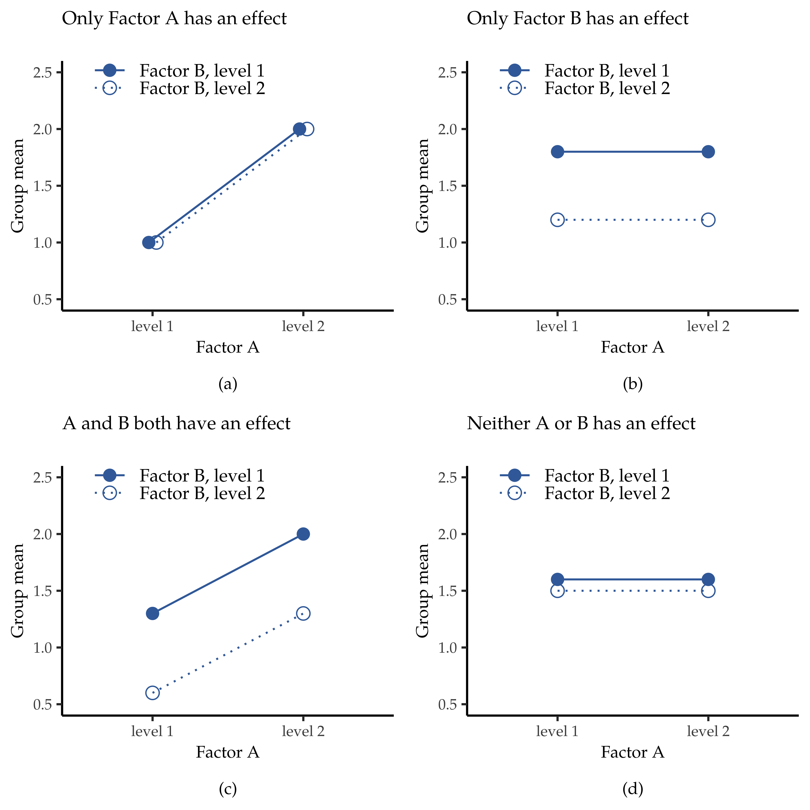
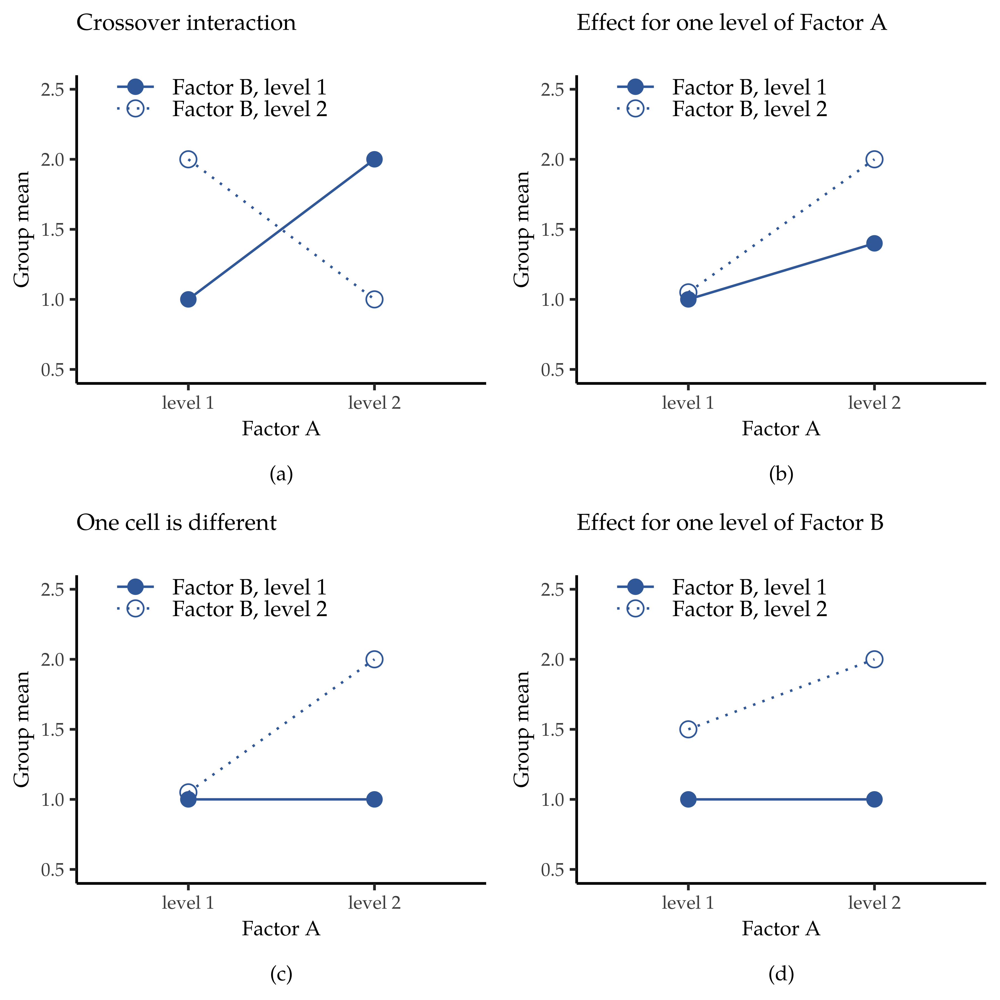
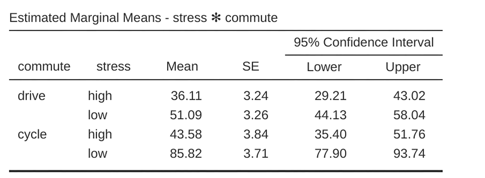
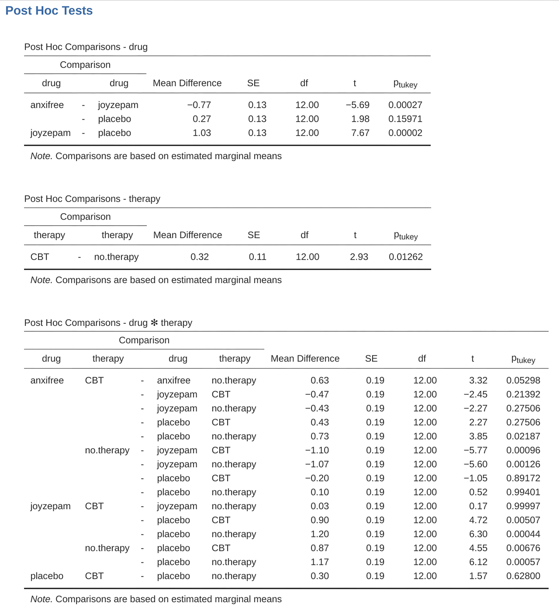
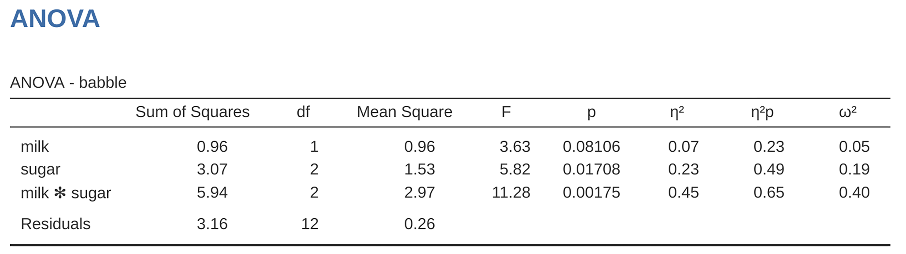

14 Factorial ANOVA
Over the course of the last few chapters we have done quite a lot. We have looked at statistical tests you can use when you have one nominal predictor variable with two groups (e.g. the t-test in Chapter 11) or with three or more groups (Chapter 13). Chapter 12 introduced a powerful new idea, that is building statistical models with multiple continuous predictor variables used to explain a single outcome variable. For instance, a regression model could be used to predict the number of errors a student makes in a reading comprehension test based on the number of hours they studied for the test and their score on a standardised \(IQ\) test.
The goal in this chapter is to extend the idea of using multiple predictors into the ANOVA framework. For instance, suppose we were interested in using the reading comprehension test to measure student achievements in three different schools, and we suspect that girls and boys are developing at different rates (and so would be expected to have different performance on average). Each student is classified in two different ways: on the basis of their gender and on the basis of their school. What we’d like to do is analyse the reading comprehension scores in terms of both of these grouping variables. The tool for doing so is generically referred to as factorial ANOVA. However, since we have two grouping variables, we sometimes refer to the analysis as a two-way ANOVA, in contrast to the one-way ANOVAs that we ran in Chapter 13.
14.1 Factorial ANOVA 1: balanced designs, no interactions
When we discussed analysis of variance in Chapter 13, we assumed a fairly simple experimental design. Each person is in one of several groups and we want to know whether these groups have different mean scores on some outcome variable. In this section, I’ll discuss a broader class of experimental designs known as factorial designs, in which we have more than one grouping variable. I gave one example of how this kind of design might arise above. Another example appears in Chapter 13 in which we were looking at the effect of different drugs on the mood.gain experienced by each person. In that chapter we did find a significant effect of drug, but at the end of the chapter we also ran an analysis to see if there was an effect of therapy. We didn’t find one, but there’s something a bit worrying about trying to run two separate analyses trying to predict the same outcome. Maybe there actually is an effect of therapy on mood gain, but we couldn’t find it because it was being “hidden” by the effect of drug? In other words, we’re going to want to run a single analysis that includes both drug and therapy as predictors. For this analysis each person is cross-classified by the drug they were given (a factor with 3 levels) and what therapy they received (a factor with 2 levels). We refer to this as a \(3 \times 2\) factorial design.
If we cross-tabulate drug by therapy, using the ‘Frequencies’ - ‘Contingency Tables’ analysis in jamovi (see Section 6.1), we get the table shown in Figure 14.1.
As you can see, not only do we have participants corresponding to all possible combinations of the two factors, indicating that our design is completely crossed, it turns out that there are an equal number of people in each group. In other words, we have a balanced design. In this section I’ll talk about how to analyse data from balanced designs, since this is the simplest case. The story for unbalanced designs is quite tedious, so we’ll put it to one side for the moment.
14.1.1 What hypotheses are we testing?
Like one-way ANOVA, factorial ANOVA is a tool for testing certain types of hypotheses about population means. So a sensible place to start would be to be explicit about what our hypotheses actually are. However, before we can even get to that point, it’s really useful to have some clean and simple notation to describe the population means. Because of the fact that observations are cross-classified in terms of two different factors, there are quite a lot of different means that one might be interested in. To see this, let’s start by thinking about all the different sample means that we can calculate for this kind of design. Firstly, there’s the obvious idea that we might be interested in this list of group means (Table 14.1).
| drug | therapy | mood.gain |
|---|---|---|
| placebo | no.therapy | 0.30 |
| anxifree | no.therapy | 0.40 |
| joyzepam | no.therapy | 1.47 |
| placebo | CBT | 0.60 |
| anxifree | CBT | 1.03 |
| joyzepam | CBT | 1.50 |
Now, the next Table (Table 14.2) shows a list of the group means for all possible combinations of the two factors (e.g., people who received the placebo and no therapy, people who received the placebo while getting CBT, etc.). It is helpful to organise all these numbers, plus the marginal and grand means, into a single table which looks like this:
| no therapy | CBT | total | |
|---|---|---|---|
| placebo | 0.30 | 0.60 | 0.45 |
| anxifree | 0.40 | 1.03 | 0.72 |
| joyzepam | 1.47 | 1.50 | 1.48 |
| total | 0.72 | 1.04 | 0.88 |
Now, each of these different means is of course a sample statistic. It’s a quantity that pertains to the specific observations that we’ve made during our study. What we want to make inferences about are the corresponding population parameters. That is, the true means as they exist within some broader population. Those population means can also be organised into a similar table, but we’ll need a little mathematical notation to do so (Table 14.3). As usual, I’ll use the symbol \(\mu\) to denote a population mean. However, because there are lots of different means, I’ll need to use subscripts to distinguish between them.
Here’s how the notation works. Our table is defined in terms of two factors. Each row corresponds to a different level of Factor A (in this case drug), and each column corresponds to a different level of Factor B (in this case therapy). If we let R denote the number of rows in the table, and \(C\) denote the number of columns, we can refer to this as an \(R \times C\) factorial ANOVA. In this case \(R = 3\) and \(C = 2\). We’ll use lowercase letters to refer to specific rows and columns, so \(\mu_{rc}\) refers to the population mean associated with the \(r\)-th level of Factor \(A\) (i.e. row number \(r\)) and the \(c\)-th level of Factor B (column number c).1 So the population means are now written like in Table 14.1:
| no therapy | CBT | total | |
|---|---|---|---|
| placebo | \( \mu_{11} \) | \( \mu_{12} \) | |
| anxifree | \( \mu_{21} \) | \( \mu_{22} \) | |
| joyzepam | \( \mu_{31} \) | \( \mu_{32} \) | |
| total |
Okay, what about the remaining entries? For instance, how should we describe the average mood gain across the entire (hypothetical) population of people who might be given Joyzepam in an experiment like this, regardless of whether they were in CBT? We use the “dot” notation to express this. In the case of Joyzepam, notice that we’re talking about the mean associated with the third row in the table. That is, we’re averaging across two cell means (i.e., \(\mu_{31}\) and \(\mu_{32}\)). The result of this averaging is referred to as a marginal mean, and would be denoted \(\mu_3.\) in this case. The marginal mean for CBT corresponds to the population mean associated with the second column in the table, so we use the notation because it is the mean obtained by averaging (marginalising2) over both. So our full table of population means can be written down like in Table 14.4.
| no therapy | CBT | total | |
|---|---|---|---|
| placebo | \( \mu_{11} \) | \( \mu_{12} \) | \( \mu_{1.} \) |
| anxifree | \( \mu_{21} \) | \( \mu_{22} \) | \( \mu_{2.} \) |
| joyzepam | \( \mu_{31} \) | \( \mu_{32} \) | \( \mu_{3.} \) |
| total | \( \mu_{.1} \) | \( \mu_{.2} \) | \( \mu_{..} \) |
Now that we have this notation, it is straightforward to formulate and express some hypotheses. Let’s suppose that the goal is to find out two things. First, does the choice of drug have any effect on mood? And second, does CBT have any effect on mood? These aren’t the only hypotheses that we could formulate of course, and we’ll see a really important example of a different kind of hypothesis in the section Factorial ANOVA 2: balanced designs, interactions allowed, but these are the two simplest hypotheses to test, and so we’ll start there. Consider the first test. If the drug has no effect then we would expect all of the row means to be identical, right? So that’s our null hypothesis. On the other hand, if the drug does matter then we should expect these row means to be different. Formally, we write down our null and alternative hypotheses in terms of the equality of marginal means:
\[\text{Null hypothesis, } H_0 \text{: row means are the same, i.e., } \mu_{1. } = \mu_{2. } = \mu_{3. }\]
\[\text{Alternative hypothesis, } H_1 \text{: at least one row mean is different}\]
It’s worth noting that these are exactly the same statistical hypotheses that we formed when we ran a one-way ANOVA on these data in Chapter 13. Back then I used the notation \(\mu \times {P}\) to refer to the mean mood gain for the placebo group, with \(\mu{A}\) and \(\mu \times {J}\) corresponding to the group means for the two drugs, and the null hypothesis was \(\mu{P} = \mu{A} = \mu{J}\) . So we’re actually talking about the same hypothesis, it’s just that the more complicated ANOVA requires more careful notation due to the presence of multiple grouping variables, so we’re now referring to this hypothesis as \(\mu_{ 1.} = \mu_{ 2.} = \mu_{ 3.}\) . However, as we’ll see shortly, although the hypothesis is identical the test of that hypothesis is subtly different due to the fact that we’re now acknowledging the existence of the second grouping variable.
Speaking of the other grouping variable, you won’t be surprised to discover that our second hypothesis test is formulated the same way. However, since we’re talking about the psychological therapy rather than drugs our null hypothesis now corresponds to the equality of the column means:
\[\text{Null hypothesis, } H_0 \text{: column means are the same, i.e., } \mu_{ .1} = \mu_{ .2} \] \[\text{Alternative hypothesis, } H_1 \text{: column means are different, i.e., } \mu_{ .1} \neq \mu_{ .2}\]
14.1.2 Running the analysis in jamovi
The null and alternative hypotheses that I described in the last section should seem awfully familiar. They’re basically the same as the hypotheses that we were testing in our simpler oneway ANOVAs in Chapter 13. So you’re probably expecting that the hypothesis tests that are used in factorial ANOVA will be essentially the same as the F-test from Chapter 13. You’re expecting to see references to sums of squares (SS), mean squares (MS), degrees of freedom (df), and finally an F-statistic that we can convert into a p-value, right? Well, you’re absolutely and completely right. So much so that I’m going to depart from my usual approach. Throughout this book, I’ve generally taken the approach of describing the logic (and to an extent the mathematics) that underpins a particular analysis first and only then introducing the analysis in jamovi. This time I’m going to do it the other way around and show you how to do it in jamovi first. The reason for doing this is that I want to highlight the similarities between the simple one-way ANOVA tool that we discussed in Chapter 13, and the more complicated approach that we’re going to use in this chapter.
If the data you’re trying to analyse correspond to a balanced factorial design then running your analysis of variance is easy. To see how easy it is, let’s start by reproducing the original analysis from Chapter 13. In case you’ve forgotten, for that analysis we were using only a single factor (i.e., drug) to predict our outcome variable (i.e., mood.gain), and we got the results shown in Figure 14.2.
Now, suppose I’m also curious to find out if therapy has a relationship to mood.gain. In light of what we’ve seen from our discussion of multiple regression in Chapter 12, you probably won’t be surprised that all we have to do is add therapy as a second ‘Fixed Factor’ in the analysis, see Figure 14.3.

This output is pretty simple to read too. The first row of the table reports a between-group sum of squares (SS) value associated with the drug factor, along with a corresponding between-group df value. It also calculates a mean square value (MS), an F-statistic and a p-value. is also a row corresponding to the therapy factor and a row corresponding to the residuals (i.e., the within groups variation).
Not only are all of the individual quantities pretty familiar, the relationships between these different quantities has remained unchanged, just like we saw with the original one-way ANOVA. Note that the mean square value is calculated by dividing \(SS\) by the corresponding \(df\). That is, it’s still true that
\[MS=\frac{SS}{df}\]
regardless of whether we’re talking about drug, therapy or the residuals. To see this, let’s not worry about how the sums of squares values are calculated. Instead, let’s take it on faith that jamovi has calculated the \(SS\) values correctly, and try to verify that all the rest of the numbers make sense. First, note that for the drug factor, we divide \(3.45\) by \(2\) and end up with a mean square value of \(1.73\). For the therapy factor, there’s only 1 degree of freedom, so our calculations are even simpler: dividing \(0.47\) (the \(SS\) value) by 1 gives us an answer of \(0.47\) (the \(MS\) value).
Turning to the F statistics and the p values, notice that we have two of each; one corresponding to the drug factor and the other corresponding to the therapy factor. Regardless of which one we’re talking about, the F statistic is calculated by dividing the mean square value associated with the factor by the mean square value associated with the residuals. If we use “A” as shorthand notation to refer to the first factor (factor A; in this case drug) and “R” as shorthand notation to refer to the residuals, then the F statistic associated with factor A is denoted FA, and is calculated as follows:
\[F_A=\frac{MS_A}{MS_R}\]
and an equivalent formula exists for factor B (i.e., therapy). Note that this use of “R” to refer to residuals is a bit awkward, since we also used the letter R to refer to the number of rows in the table, but I’m only going to use “R” to mean residuals in the context of SSR and MSR, so hopefully this shouldn’t be confusing. Anyway, to apply this formula to the drugs factor we take the mean square of 1.73 and divide it by the residual mean square value of \(0.07\), which gives us an F-statistic of 26.15. The corresponding calculation for the therapy variable would be to divide \(0.47\) by \(0.07\) which gives \(7.08\) as the F-statistic. Not surprisingly, of course, these are the same values that jamovi has reported in the ANOVA table above.
Also in the ANOVA table is the calculation of the p values. Once again, there is nothing new here. For each of our two factors what we’re trying to do is test the null hypothesis that there is no relationship between the factor and the outcome variable (I’ll be a bit more precise about this later on). To that end, we’ve (apparently) followed a similar strategy to what we did in the one way ANOVA and have calculated an F-statistic for each of these hypotheses. To convert these to p values, all we need to do is note that the sampling distribution for the F statistic under the null hypothesis (that the factor in question is irrelevant) is an F distribution. Also note that the two degrees of freedom values are those corresponding to the factor and those corresponding to the residuals. For the drug factor we’re talking about an F distribution with 2 and 14 degrees of freedom (I’ll discuss degrees of freedom in more detail later). In contrast, for the therapy factor the sampling distribution is F with 1 and 14 degrees of freedom.
At this point, I hope you can see that the ANOVA table for this more complicated factorial analysis should be read in much the same way as the ANOVA table for the simpler one way analysis. In short, it’s telling us that the factorial ANOVA for our \(3 \times 2\) design found a significant effect of drug (\(F_{2,14} = 26.15, p < .001\)) as well as a significant effect of therapy (\(F_{1,14} = 7.08, p = .02\)). Or, to use the more technically correct terminology, we would say that there are two main effects of drug and therapy. At the moment, it probably seems a bit redundant to refer to these as “main” effects, but it actually does make sense. Later on, we’re going to want to talk about the possibility of “interactions” between the two factors, and so we generally make a distinction between main effects and interaction effects.
14.1.3 How are the sum of squares calculated?
In the previous section I had two goals. Firstly, to show you that the jamovi method needed to do factorial ANOVA is pretty much the same as what we used for a one way ANOVA. The only difference is the addition of a second factor. Secondly, I wanted to show you what the ANOVA table looks like in this case, so that you can see from the outset that the basic logic and structure behind factorial ANOVA is the same as that which underpins one way ANOVA. Try to hold onto that feeling. It’s genuinely true, insofar as factorial ANOVA is built in more or less the same way as the simpler one-way ANOVA model. It’s just that this feeling of familiarity starts to evaporate once you start digging into the details. Traditionally, this comforting sensation is replaced by an urge to hurl abuse at the authors of statistics textbooks.
Okay, let’s start by looking at some of those details. The explanation that I gave in the last section illustrates the fact that the hypothesis tests for the main effects (of drug and therapy in this case) are F-tests, but what it doesn’t do is show you how the sum of squares (SS) values are calculated. Nor does it tell you explicitly how to calculate degrees of freedom (df values) though that’s a simple thing by comparison. Let’s assume for now that we have only two predictor variables, Factor A and Factor B. If we use Y to refer to the outcome variable, then we would use Yrci to refer to the outcome associated with the i-th member of group rc (i.e., level/row r for Factor A and level/column c for Factor B). Thus, if we use \(\bar{Y}\) to refer to a sample mean, we can use the same notation as before to refer to group means, marginal means and grand means. That is, \(\bar{Y}_{rc}\) is the sample mean associated with the rth level of Factor A and the cth level of Factor: \(\bar{Y}_{r.}\) would be the marginal mean for the rth level of Factor A, \(\bar{Y}_{.c}\) would be the marginal mean for the cth level of Factor B, and \(\bar{Y}_{..}\) is the grand mean. In other words, our sample means can be organised into the same table as the population means. For our clinical trial data, that table is shown in Table 14.5.
| no therapy | CBT | total | |
|---|---|---|---|
| placebo | \( \bar{Y}_{11} \) | \( \bar{Y}_{12} \) | \( \bar{Y}_{1.} \) |
| anxifree | \( \bar{Y}_{21} \) | \( \bar{Y}_{22} \) | \( \bar{Y}_{2.} \) |
| joyzepam | \( \bar{Y}_{31} \) | \( \bar{Y}_{32} \) | \( \bar{Y}_{3.} \) |
| total | \( \bar{Y}_{.1} \) | \( \bar{Y}_{.2} \) | \( \bar{Y}_{..} \) |
And if we look at the sample means that I showed earlier, we have \(\bar{Y}_{11} = 0.30\), \(\bar{Y}_{12} = 0.60\) etc. In our clinical trial example, the drugs factor has 3 levels and the therapy factor has 2 levels, and so what we’re trying to run is a \(3 \times 2\) factorial ANOVA. However, we’ll be a little more general and say that Factor A (the row factor) has R levels and Factor B (the column factor) has C levels, and so what we’re running here is an \(R \times C\) factorial ANOVA.
[Additional technical detail 3]
14.1.4 What are our degrees of freedom?
The degrees of freedom are calculated in much the same way as for one-way ANOVA. For any given factor, the degrees of freedom is equal to the number of levels minus 1 (i.e., \(R - 1\) for the row variable Factor A, and \(C - 1\) for the column variable Factor B). So, for the drugs factor we obtain \(df = 2\), and for the therapy factor we obtain \(df = 1\). Later on, when we discuss the interpretation of ANOVA as a regression model (see Section 14.6), I’ll give a clearer statement of how we arrive at this number. But for the moment we can use the simple definition of degrees of freedom, namely that the degrees of freedom equals the number of quantities that are observed, minus the number of constraints. So, for the drugs factor, we observe 3 separate group means, but these are constrained by 1 grand mean, and therefore the degrees of freedom is 2. For the residuals, the logic is similar, but not quite the same. The total number of observations in our experiment is 18. The constraints correspond to 1 grand mean, the 2 additional group means that the drug factor introduces, and the 1 additional group mean that the the therapy factor introduces, and so our degrees of freedom is 14. As a formula, this is \(N - 1 - (R - 1) - (C - 1)\), which simplifies to \(N - R - C + 1\).
14.1.5 Factorial ANOVA versus one-way ANOVAs
Now that we’ve seen how a factorial ANOVA works, it’s worth taking a moment to compare it to the results of the one way analyses, because this will give us a really good sense of why it’s a good idea to run the factorial ANOVA. In Chapter 13 I ran a one-way ANOVA that looked to see if there are any differences between drugs, and a second one-way ANOVA to see if there were any differences between therapies. As we saw in the section Section 14.1.1, the null and alternative hypotheses tested by the one-way ANOVAs are in fact identical to the hypotheses tested by the factorial ANOVA. Looking even more carefully at the ANOVA tables, we can see that the sum of squares associated with the factors are identical in the two different analyses (3.45 for drug and 0.92 for therapy), as are the degrees of freedom (2 for drug, 1 for therapy). But they don’t give the same answers! Most notably, when we ran the one-way ANOVA for therapy in Section 13.9 we didn’t find a significant effect (the p-value was .21). However, when we look at the main effect of therapy within the context of the two-way ANOVA, we do get a significant effect (p = .019). The two analyses are clearly not the same.
Why does that happen? The answer lies in understanding how the residuals are calculated. Recall that the whole idea behind an F-test is to compare the variability that can be attributed to a particular factor with the variability that cannot be accounted for (the residuals). If you run a one-way ANOVA for therapy, and therefore ignore the effect of drug, the ANOVA will end up dumping all of the drug-induced variability into the residuals! This has the effect of making the data look more noisy than they really are, and the effect of therapy which is correctly found to be significant in the two-way ANOVA now becomes non-significant. If we ignore something that actually matters (e.g., drug) when trying to assess the contribution of something else (e.g., therapy) then our analysis will be distorted. Of course, it’s perfectly okay to ignore variables that are genuinely irrelevant to the phenomenon of interest. If we had recorded the colour of the walls, and that turned out to be a non-significant factor in a three-way ANOVA, it would be perfectly okay to disregard it and just report the simpler two-way ANOVA that doesn’t include this irrelevant factor. What you shouldn’t do is drop variables that actually make a difference!
14.1.6 What kinds of outcomes does this analysis capture?
The ANOVA model that we’ve been talking about so far covers a range of different patterns that we might observe in our data. For instance, in a two-way ANOVA design there are four possibilities: (a) only Factor A matters, (b) only Factor B matters, (c) both A and B matter, and (d) neither A nor B matters. An example of each of these four possibilities is plotted in Figure 14.4.
14.2 Factorial ANOVA 2: balanced designs, interactions allowed
The four patterns of data shown in Figure 14.4 are all quite realistic. There are a great many data sets that produce exactly those patterns. However, they are not the whole story and the ANOVA model that we have been talking about up to this point is not sufficient to fully account for a table of group means. Why not? Well, so far we have the ability to talk about the idea that drugs can influence mood, and therapy can influence mood, but no way of talking about the possibility of an interaction between the two. An interaction between \(A\) and \(B\) is said to occur whenever the effect of Factor \(A\) is different, depending on which level of Factor \(B\) we’re talking about. Several examples of an interaction effect with the context of a \(2 \times 2\) ANOVA are shown in Figure 14.5. To give a more concrete example, suppose that the operation of Anxifree and Joyzepam is governed by quite different physiological mechanisms. One consequence of this is that while Joyzepam has more or less the same effect on mood regardless of whether one is in therapy, Anxifree is actually much more effective when administered in conjunction with CBT. The ANOVA that we developed in the previous section does not capture this idea. To get some idea of whether an interaction is actually happening here, it helps to plot the various group means. In jamovi this is done via the ANOVA ‘Estimated Marginal Means’ option - just move drug and therapy across into the ‘Marginal Means’ box under ‘Term 1’. This should look something like Figure 14.6. Our main concern relates to the fact that the two lines aren’t parallel. The effect of CBT (difference between solid line and dotted line) when the drug is Joyzepam (right side) appears to be near zero, even smaller than the effect of CBT when a placebo is used (left side). However, when Anxifree is administered, the effect of CBT is larger than the placebo (middle). Is this effect real, or is this just random variation due to chance? Our original ANOVA cannot answer this question, because we make no allowances for the idea that interactions even exist! In this section, we’ll fix this problem.


14.2.1 What exactly is an interaction effect?
The key idea that we’re going to introduce in this section is that of an interaction effect. In the ANOVA model we have looked at so far there are only two factors involved in our model (i.e., drug and therapy). But when we add an interaction we add a new component to the model: the combination of drug and therapy. Intuitively, the idea behind an interaction effect is fairly simple. It just means that the effect of Factor A is different, depending on which level of Factor B we’re talking about. But what does that actually mean in terms of our data? The plot in Figure 14.5 depicts several different patterns that, although quite different to each other, would all count as an interaction effect. So it’s not entirely straightforward to translate this qualitative idea into something mathematical that a statistician can work with.
[Additional technical detail 4]
14.2.2 Degrees of freedom for the interaction
Calculating the degrees of freedom for the interaction is, once again, slightly trickier than the corresponding calculation for the main effects. To start with, let’s think about the ANOVA model as a whole. Once we include interaction effects in the model we’re allowing every single group to have a unique mean, \(mu_{rc}\). For an \(R \times C\) factorial ANOVA, this means that there are \(R \times C\) quantities of interest in the model and only the one constraint: all of the group means need to average out to the grand mean. So the model as a whole needs to have (\(R \times C\)) - 1 degrees of freedom. But the main effect of Factor A has \(R - 1\) degrees of freedom, and the main effect of Factor B has \(C - 1\) degrees of freedom. This means that the degrees of freedom associated with the interaction is
\[ \begin{aligned} df_{A:B} & = (R \times C - 1) - (R - 1) - (C - 1) \\ & = RC - R - C + 1 \\ & = (R-1)(C-1) \end{aligned} \]
which is just the product of the degrees of freedom associated with the row factor and the column factor.
What about the residual degrees of freedom? Because we’ve added interaction terms which absorb some degrees of freedom, there are fewer residual degrees of freedom left over. Specifically, note that if the model with interaction has a total of \((R \times C) - 1\), and there are \(N\) observations in your data set that are constrained to satisfy 1 grand mean, your residual degrees of freedom now become \(N - (R \times C) - 1 + 1\), or just \(N - (R \times C)\).
14.2.3 Running the ANOVA in jamovi
Adding interaction terms to the ANOVA model in jamovi is straightforward. In fact it is more than straightforward because it is the default option for ANOVA. This means that when you specify an ANOVA with two factors, e.g. drug and therapy then the interaction component - drug \(\times\) therapy - is added automatically to the model5. When we run the ANOVA with the interaction term included, then we get the results shown in Figure 14.7.
As it turns out, while we do have a significant main effect of drug (\(F_{2,12} = 31.7, p < .001\)) and therapy type (\(F_{1,12} = 8.6, p = .013\)), there is no significant interaction between the two (\(F_{2,12} = 2.5, p = 0.125\)).
14.2.4 Interpreting the results
There’s a couple of very important things to consider when interpreting the results of factorial ANOVA. First, there’s the same issue that we had with one-way ANOVA, which is that if you obtain a significant main effect of (say) drug, it doesn’t tell you anything about which drugs are different to one another. To find that out, you need to run additional analyses. We’ll talk about some analyses that you can run in later Sections: Different ways to specify contrasts and Post hoc tests. The same is true for interaction effects. Knowing that there’s a significant interaction doesn’t tell you anything about what kind of interaction exists. Again, you’ll need to run additional analyses.
Secondly, there’s a very peculiar interpretation issue that arises when you obtain a significant interaction effect but no corresponding main effect. This happens sometimes. For instance, in the crossover interaction shown in Figure 14.5 a, this is exactly what you’d find. In this case, neither of the main effects would be significant, but the interaction effect would be. This is a difficult situation to interpret, and people often get a bit confused about it. The general advice that statisticians like to give in this situation is that you shouldn’t pay much attention to the main effects when an interaction is present. The reason they say this is that, although the tests of the main effects are perfectly valid from a mathematical point of view, when there is a significant interaction effect the main effects rarely test interesting hypotheses. Recall from Section 14.1.1 that the null hypothesis for a main effect is that the marginal means are equal to each other, and that a marginal mean is formed by averaging across several different groups. But if you have a significant interaction effect then you know that the groups that comprise the marginal mean aren’t homogeneous, so it’s not really obvious why you would even care about those marginal means.
Here’s what I mean. Again, let’s stick with a clinical example. Suppose that we had a \(2 \times 2\) design comparing two different treatments for phobias (e.g., systematic desensitisation vs flooding), and two different anxiety reducing drugs (e.g., Anxifree vs Joyzepam). Now, suppose what we found was that Anxifree had no effect when desensitisation was the treatment, and Joyzepam had no effect when flooding was the treatment. But both were pretty effective for the other treatment. This is a classic crossover interaction, and what we’d find when running the ANOVA is that there is no main effect of drug, but a significant interaction. Now, what does it actually mean to say that there’s no main effect? Well, it means that if we average over the two different psychological treatments, then the average effect of Anxifree and Joyzepam is the same. But why would anyone care about that? When treating someone for phobias it is never the case that a person can be treated using an “average” of flooding and desensitisation. That doesn’t make a lot of sense. You either get one or the other. For one treatment one drug is effective, and for the other treatment the other drug is effective. The interaction is the important thing and the main effect is kind of irrelevant.
This sort of thing happens a lot. The main effect are tests of marginal means, and when an interaction is present we often find ourselves not being terribly interested in marginal means because they imply averaging over things that the interaction tells us shouldn’t be averaged! Of course, it’s not always the case that a main effect is meaningless when an interaction is present. Often you can get a big main effect and a very small interaction, in which case you can still say things like “drug A is generally more effective than drug B” (because there was a big effect of drug), but you’d need to modify it a bit by adding that “the difference in effectiveness was different for different psychological treatments”. In any case, the main point here is that whenever you get a significant interaction you should stop and think about what the main effect actually means in this context. Don’t automatically assume that the main effect is interesting.
14.3 Effect size
The effect size calculation for a factorial ANOVA is pretty similar to those used in one way ANOVA (see Effect size section). Specifically, we can use \(\eta^2\) (eta-squared) as a simple way to measure how big the overall effect is for any particular term. As before, \(\eta^2\) is defined by dividing the sum of squares associated with that term by the total sum of squares. For instance, to determine the size of the main effect of Factor A, we would use the following formula:
\[\eta_A^2=\frac{SS_A}{SS_T}\]
As before, this can be interpreted in much the same way as \(R^2\) in regression.6 It tells you the proportion of variance in the outcome variable that can be accounted for by the main effect of Factor A. It is therefore a number that ranges from 0 (no effect at all) to 1 (accounts for all of the variability in the outcome). Moreover, the sum of all the \(\eta^2\) values, taken across all the terms in the model, will sum to the the total \(R^2\) for the ANOVA model. If, for instance, the ANOVA model fits perfectly (i.e., there is no within-groups variability at all!), the \(\eta^2\) values will sum to 1. Of course, that rarely if ever happens in real life.
However, when doing a factorial ANOVA, there is a second measure of effect size that people like to report, known as partial \(\eta^2\). The idea behind partial \(\eta^2\) (which is sometimes denoted \(p^{\eta^2}\) or \(\eta_p^2\)) is that, when measuring the effect size for a particular term (say, the main effect of Factor A), you want to deliberately ignore the other effects in the model (e.g., the main effect of Factor B). That is, you would pretend that the effect of all these other terms is zero, and then calculate what the \(\eta^2\) value would have been. This is actually pretty easy to calculate. All you have to do is remove the sum of squares associated with the other terms from the denominator. In other words, if you want the partial \(\eta^2\) for the main effect of Factor A, the denominator is just the sum of the SS values for Factor A and the residuals
\[\text{partial }\eta_A^2= \frac{SS_A}{SS_A+SS_R}\]
This will always give you a larger number than \(\eta^2\), which the cynic in me suspects accounts for the popularity of partial \(\eta^2\). And once again you get a number between 0 and 1, where 0 represents no effect. However, it’s slightly trickier to interpret what a large partial \(\eta^2\) value means. In particular, you can’t actually compare the partial \(\eta^2\) values across terms! Suppose, for instance, there is no within-groups variability at all: if so, \(SS_R = 0\). What that means is that every term has a partial \(\eta^2\) value of 1. But that doesn’t mean that all terms in your model are equally important, or indeed that they are equally large. All it mean is that all terms in your model have effect sizes that are large relative to the residual variation. It is not comparable across terms.
To see what I mean by this, it’s useful to see a concrete example. First, let’s have a look at the effect sizes for the original ANOVA (Table 14.6) without the interaction term, from Figure 14.3.
| eta.sq | partial.eta.sq | |
|---|---|---|
| drug | 0.71 | 0.79 |
| therapy | 0.10 | 0.34 |
Looking at the \(\eta^2\) values first, we see that drug accounts for 71% of the variance (i.e. \(\eta^2 = 0.71\)) in mood.gain, whereas therapy only accounts for 10%. This leaves a total of 19% of the variation unaccounted for (i.e., the residuals constitute 19% of the variation in the outcome). Overall, this implies that we have a very large effect7 of drug and a modest effect of therapy.
Now let’s look at the partial \(\eta^2\) values, shown in Figure 14.3. Because the effect of therapy isn’t all that large, controlling for it doesn’t make much of a difference, so the partial \(\eta^2\) for drug doesn’t increase very much, and we obtain a value of \(p^{\eta^2} = 0.79\). In contrast, because the effect of drug was very large, controlling for it makes a big difference, and so when we calculate the partial \(\eta^2\) for therapy you can see that it rises to \(p^{\eta^2} = 0.34\). The question that we have to ask ourselves is, what do these partial \(\eta^2\) values actually mean? The way I generally interpret the partial \(\eta^2\) for the main effect of Factor A is to interpret it as a statement about a hypothetical experiment in which only Factor A was being varied. So, even though in this experiment we varied both A and B, we can easily imagine an experiment in which only Factor A was varied, and the partial \(\eta^2\) statistic tells you how much of the variance in the outcome variable you would expect to see accounted for in that experiment. However, it should be noted that this interpretation, like many things associated with main effects, doesn’t make a lot of sense when there is a large and significant interaction effect.
Speaking of interaction effects, Table 14.7 shows what we get when we calculate the effect sizes for the model that includes the interaction term, as in Figure 14.7. As you can see, the \(\eta^2\) values for the main effects don’t change, but the partial \(\eta^2\) values do:
| eta.sq | partial.eta.sq | |
|---|---|---|
| drug | 0.71 | 0.84 |
| therapy | 0.10 | 0.42 |
| drug*therapy | 0.06 | 0.29 |
14.3.1 Estimated group means
In many situations you will find yourself wanting to report estimates of all the group means based on the results of your ANOVA, as well as confidence intervals associated with them. You can use the ‘Estimated Marginal Means’ option in the jamovi ANOVA analysis to do this, as in Figure 14.8. If the ANOVA that you have run is a saturated model (i.e., contains all possible main effects and all possible interaction effects) then the estimates of the group means are actually identical to the sample means, though the confidence intervals will use a pooled estimate of the standard errors rather than use a separate one for each group.
In the output we see that the estimated mean mood gain for the placebo group with no therapy was \(0.300\), with a \(95\%\) confidence interval from \(0.006\) to \(0.594\). Note that these are not the same confidence intervals that you would get if you calculated them separately for each group, because of the fact that the ANOVA model assumes homogeneity of variance and therefore uses a pooled estimate of the standard deviation.
When the model doesn’t contain the interaction term, then the estimated group means will be different from the sample means. Instead of reporting the sample mean, jamovi will calculate the value of the group means that would be expected on the basis of the marginal means (i.e., assuming no interaction). Using the notation we developed earlier, the estimate reported for µrc, the mean for level r on the (row) Factor A and level c on the (column) Factor B would be \(\mu_{..} + \alpha_r + \beta_c\). If there are genuinely no interactions between the two factors, this is actually a better estimate of the population mean than the raw sample mean would be. Removing the interaction term from the model, via the ‘Model’ options in the jamovi ANOVA analysis, provides the marginal means for the analysis shown in Figure 14.9.

14.4 Assumption checking
As with one-way ANOVA, the key assumptions of factorial ANOVA are homogeneity of variance (all groups have the same standard deviation), normality of the residuals, and independence of the observations. The first two are things we can check for. The third is something that you need to assess yourself by asking if there are any special relationships between different observations, for example repeated measures where the independent variable is time so there is a relationship between the observations at time one and time two: observations at different time points are from the same people. Additionally, if you aren’t using a saturated model (e.g., if you’ve omitted the interaction terms) then you’re also assuming that the omitted terms aren’t important. Of course, you can check this last one by running an ANOVA with the omitted terms included and see if they’re significant, so that’s pretty easy. What about homogeneity of variance and normality of the residuals? As it turns out, these are pretty easy to check. It’s no different to the checks we did for a one-way ANOVA.
14.4.1 Homogeneity of variance
As mentioned in Section 13.6.1 in the last chapter, it’s a good idea to visually inspect a plot of the standard deviations compared across different groups / categories, and also see if the Levene test is consistent with the visual inspection. The theory behind the Levene test was discussed in Section 13.6.1, so I won’t discuss it again. This test expects that you have a saturated model (i.e., including all of the relevant terms), because the test is primarily concerned with the within-group variance, and it doesn’t really make a lot of sense to calculate this any way other than with respect to the full model. The Levene test can be specified under the ANOVA ‘Assumption Checks’ - ‘Homogeneity Tests’ option in jamovi, with the result shown as in Figure 14.10. The fact that the Levene test is non-significant means that, providing it is consistent with a visual inspection of the plot of standard deviations, we can safely assume that the homogeneity of variance assumption is not violated.
14.4.2 Normality of residuals
As with one-way ANOVA we can test for the normality of residuals in a straightforward fashion (see Section 13.6.4). Primarily though, it’s generally a good idea to examine the residuals graphically using a QQ plot. See Figure 14.10.
14.5 Analysis of Covariance (ANCOVA)
A variation in ANOVA is when you have an additional continuous variable that you think might be related to the dependent variable. This additional variable can be added to the analysis as a covariate, in the aptly named analysis of covariance (ANCOVA).
In ANCOVA the values of the dependent variable are “adjusted” for the influence of the covariate, and then the “adjusted” score means are tested between groups in the usual way. This technique can increase the precision of an experiment, and therefore provide a more “powerful” test of the equality of group means in the dependent variable. How does ANCOVA do this? Well, although the covariate itself is typically not of any experimental interest, adjustment for the covariate can decrease the estimate of experimental error and thus, by reducing error variance, precision is increased. This means that an inappropriate failure to reject the null hypothesis (false negative or type II error) is less likely.
Despite this advantage, ANCOVA runs the risk of undoing real differences between groups, and this should be avoided. Look at Figure 14.11, for example, which shows a plot of Statistics anxiety against age and shows two distinct groups – students who have either an Arts or Science background or preference. ANCOVA with age as a covariate might lead to the conclusion that statistics anxiety does not differ in the two groups. Would this conclusion be reasonable – probably not because the ages of the two groups do not overlap and analysis of variance has essentially “extrapolated into a region with no data” (Everitt (1996), p. 68).

Clearly, careful thought needs to be given to an analysis of covariance with distinct groups. This applies to both one-way and factorial designs, as ANCOVA can be used with both.
14.5.1 Running ANCOVA in jamovi
A health psychologist was interested in the effect of routine cycling and stress on happiness levels, with age as a covariate. You can find the dataset in the file ancova.csv. Open this file in jamovi and then, to undertake an ANCOVA, select Analyses - ANOVA - ANCOVA to open the ANCOVA analysis window (Figure 14.12). Highlight the dependent variable ‘happiness’ and transfer it into the ‘Dependent Variable’ text box. Highlight the independent variables ‘stress’ and ‘commute’ and transfer them into the ‘Fixed Factors’ text box. Highlight the covariate ‘age’ and transfer it into the ‘Covariates’ text box. Then Click on Estimated Marginal Means to bring up the plots and tables options.
An ANCOVA table showing Tests of Between-Subjects Effects is produced in the jamovi results window (Figure 14.13). The F value for the covariate ‘age’ is significant at \(p = .023\), suggesting that age is an important predictor of the dependent variable, happiness. When we look at the estimated marginal mean scores (Figure 14.14), adjustments have been made (compared to an analysis without the covariate) because of the inclusion of the covariate ‘age’ in this ANCOVA. A plot (Figure 14.15) is a good way of visualising and interpreting the significant effects.

The \(F\) value for the main effect ‘stress’ (52.61) has an associated probability of \(p < .001\). The \(F\) value for the main effect ‘commute’ (42.33) has an associated probability of \(p < .001\). Since both of these are less than the probability that is typically used to decide if a statistical result is significant (\(p < .05\)) we can conclude that there was a significant main effect of stress (\(F(1, 15) = 52.61, p < .001\)) and a significant main effect of commuting method (\(F(1, 15) = 42.33, p < .001\)). A significant interaction between stress and commuting method was also found (\(F(1, 15) = 14.15, p = .002\)).
In Figure 14.15 we can see the adjusted, marginal, mean happiness scores when age is a covariate in an ANCOVA. In this analysis there is a significant interaction effect, whereby people with low stress who cycle to work are happier than people with low stress who drive and people with high stress whether they cycle or drive to work. There is also a significant main effect of stress – people with low stress are happier than those with high stress. And there is also a significant main effect of commuting behaviour – people who cycle are happier, on average, than those who drive to work.

One thing to be aware of is that, if you are thinking of including a covariate in your ANOVA, there is an additional assumption: the relationship between the covariate and the dependent variable should be similar for all levels of the independent variable. This can be checked by adding an interaction term between the covariate and each independent variable in the jamovi Model - Model terms option. If the interaction effect is not significant it can be removed. If it is significant then a different and more advanced statistical technique might be appropriate (which is beyond the scope of this book so you might want to consult a friendly statistician).
14.6 ANOVA as a linear model
One of the most important things to understand about ANOVA and regression is that they’re basically the same thing. On the surface of it, you maybe wouldn’t think this is true. After all, the way that I’ve described them so far suggests that ANOVA is primarily concerned with testing for group differences, and regression is primarily concerned with understanding the correlations between variables. And, as far as it goes that’s perfectly true. But when you look under the hood, so to speak, the underlying mechanics of ANOVA and regression are awfully similar. In fact, if you think about it, you’ve already seen evidence of this. ANOVA and regression both rely heavily on sums of squares (SS), both make use of F tests, and so on. Looking back, it’s hard to escape the feeling that Chapter 12 and Chapter 13 were a bit repetitive.
The reason for this is that ANOVA and regression are both kinds of linear models. In the case of regression, this is kind of obvious. The regression equation that we use to define the relationship between predictors and outcomes is the equation for a straight line, so it’s quite obviously a linear model, with the equation
\[Y_p=b_0+b_1 X_{1p} +b_2 X_{2p} + \epsilon_p\]
where \(Y_p\) is the outcome value for the p-th observation (e.g., p-th person), \(X_{1p}\) is the value of the first predictor for the p-th observation, \(X_{2p}\) is the value of the second predictor for the p-th observation, the \(b_0\), \(b_1\), and \(b_2\) terms are our regression coefficients, and \(\epsilon_p\) is the p-th residual. If we ignore the residuals \(\epsilon_p\) and just focus on the regression line itself, we get the following formula:
\[\hat{Y}_p=b_0+b_1 X_{1p} +b_2 X_{2p} \]
where \(\hat{Y}_p\) is the value of Y that the regression line predicts for person p, as opposed to the actually-observed value \(Y_p\). The thing that isn’t immediately obvious is that we can write ANOVA as a linear model as well. However, it’s actually pretty straightforward to do this. Let’s start with a really simple example, rewriting a \(2 \times 2\) factorial ANOVA as a linear model.
14.6.1 Some data
To make things concrete, let’s suppose that our outcome variable is the grade that a student receives in my class, a ratio-scale variable corresponding to a mark from \(0%\) to \(100%\). There are two predictor variables of interest: whether or not the student turned up to lectures (the attend variable) and whether or not the student actually read the textbook (the reading variable). We’ll say that attend = 1 if the student attended class, and attend = 0 if they did not. Similarly, we’ll say that reading = 1 if the student read the textbook, and reading = 0 if they did not.
Okay, so far that’s simple enough. The next thing we need to do is to wrap some maths around this (sorry!). For the purposes of this example, let \(Y_p\) denote the grade of the p-th student in the class. This is not quite the same notation that we used earlier in this chapter. Previously, we’ve used the notation \(Y_{rci}\) to refer to the i-th person in the r-th group for predictor 1 (the row factor) and the c-th group for predictor 2 (the column factor). This extended notation was really handy for describing how the SS values are calculated, but it’s a pain in the current context, so I’ll switch notation here. Now, the \(Y_p\) notation is visually simpler than \(Y_{rci}\), but it has the shortcoming that it doesn’t actually keep track of the group memberships! That is, if I told you that \(Y_{0,0,3} = 35\), you’d immediately know that we’re talking about a student (the 3rd such student, in fact) who didn’t attend the lectures (i.e., attend = 0) and didn’t read the textbook (i.e. reading = 0), and who ended up failing the class (grade = 35). But if I tell you that \(Y_p = 35\), all you know is that the p-th student didn’t get a good grade. We’ve lost some key information here. Of course, it doesn’t take a lot of thought to figure out how to fix this. What we’ll do instead is introduce two new variables \(X_{1p}\) and \(X_{2p}\) that keep track of this information. In the case of our hypothetical student, we know that \(X_{1p} = 0\) (i.e., attend = 0) and \(X_{2p} = 0\) (i.e., reading = 0). So the data might look like Table 14.8.
| person, \(p\) | grade, \(Y_p\) | attendance, \(X_{1p}\) | reading, \(X_{2p}\) |
|---|---|---|---|
| 1 | 90 | 1 | 1 |
| 2 | 87 | 1 | 1 |
| 3 | 75 | 0 | 1 |
| 4 | 60 | 1 | 0 |
| 5 | 35 | 0 | 0 |
| 6 | 50 | 0 | 0 |
| 7 | 65 | 1 | 0 |
| 8 | 70 | 0 | 1 |
This isn’t anything particularly special, of course. It’s exactly the format in which we expect to see our data! See the data file rtfm.csv. We can use the jamovi ‘Descriptives’ analysis to confirm that this data set corresponds to a balanced design, with 2 observations for each combination of attend and reading. In the same way we can also calculate the mean grade for each combination. This is shown in Figure 14.16. Looking at the mean scores, one gets the strong impression that reading the text and attending the class both matter a lot.

14.6.2 ANOVA with binary factors as a regression model
Okay, let’s get back to talking about the mathematics. We now have our data expressed in terms of three numeric variables: the continuous variable \(Y\) and the two binary variables \(X_1\) and \(X_2\). What I want you to recognise is that our \(2 \times 2\) factorial ANOVA is exactly equivalent to the regression model
\[Y_p=b_0+b_1 X_{1p} + b_2 X_{2p} + \epsilon_p\]
This is, of course, the exact same equation that I used earlier to describe a two-predictor regression model! The only difference is that \(X_1\) and \(X_2\) are now binary variables (i.e., values can only be 0 or 1), whereas in a regression analysis we expect that \(X_1\) and \(X_2\) will be continuous. There’s a couple of ways I could try to convince you of this. One possibility would be to do a lengthy mathematical exercise proving that the two are identical. However, I’m going to go out on a limb and guess that most of the readership of this book will find that annoying rather than helpful. Instead, I’ll explain the basic ideas and then rely on jamovi to show that ANOVA analyses and regression analyses aren’t just similar, they’re identical for all intents and purposes. Let’s start by running this as an ANOVA. To do this, we’ll use the rtfm data set, and Figure 14.17 shows what we get when we run the analysis in jamovi.
So, by reading the key numbers off the ANOVA table and the mean scores that we presented earlier, we can see that the students obtained a higher grade if they attended class (\(F_{1,5} = 21.6, p = .0056\)) and if they read the textbook (\(F_{1,5} = 52.3, p = .0008\)). Let’s make a note of those p-values and those \(F\) statistics.
Now let’s think about the same analysis from a linear regression perspective. In the rtfm data set, we have encoded attend and reading as if they were numeric predictors. In this case, this is perfectly acceptable. There really is a sense in which a student who turns up to class (i.e. attend = 1) has in fact done “more attendance” than a student who does not (i.e. attend = 0). So it’s not at all unreasonable to include it as a predictor in a regression model. It’s a little unusual, because the predictor only takes on two possible values, but it doesn’t violate any of the assumptions of linear regression. And it’s easy to interpret. If the regression coefficient for attend is greater than 0 it means that students that attend lectures get higher grades. If it’s less than zero then students attending lectures get lower grades. The same is true for our reading variable.
Wait a second though. Why is this true? It’s something that is intuitively obvious to everyone who has taken a few stats classes and is comfortable with the maths, but it isn’t clear to everyone else at first pass. To see why this is true, it helps to look closely at a few specific students. Let’s start by considering the 6th and 7th students in our data set (i.e. \(p = 6\) and \(p = 7\)). Neither one has read the textbook, so in both cases we can set reading = 0. Or, to say the same thing in our mathematical notation, we observe \(X_{2,6} = 0\) and \(X_{2,7} = 0\). However, student number 7 did turn up to lectures (i.e., attend = 1, \(X_{1,7} = 1\)) whereas student number 6 did not (i.e., attend = 0, \(X_{1,6} = 0\)). Now let’s look at what happens when we insert these numbers into the general formula for our regression line. For student number 6, the regression predicts that
\[ \begin{split} \hat{Y}_6 & = b_0 + b_1 X_{1,6} + b_2 X_{2,6} \\ & = b_0 + (b_1 \times 0) + (b_2 \times 0) \\ & = b_0 \end{split} \]
So we’re expecting that this student will obtain a grade corresponding to the value of the intercept term \(b_0\). What about student 7? This time when we insert the numbers into the formula for the regression line, we obtain the following
\[ \begin{split} \hat{Y}_7 & = b_0 + b_1 X_{1,7} + b_2 X_{2,7} \\ & = b_0 + (b_1 \times 1) + (b_2 \times 0) \\ & = b_0 + b_1 \end{split} \]
Because this student attended class, the predicted grade is equal to the intercept term b0 plus the coefficient associated with the attend variable, \(b_1\). So, if \(b_1\) is greater than zero, we’re expecting that the students who turn up to lectures will get higher grades than those students who don’t. If this coefficient is negative we’re expecting the opposite: students who turn up at class end up performing much worse. In fact, we can push this a little bit further. What about student number 1, who turned up to class (\(X_{1,1} = 1\)) and read the textbook (\(X_{2,1} = 1\))? If we plug these numbers into the regression we get
\[ \begin{split} \hat{Y}_1 & = b_0 + b_1 X_{1,1} + b_2 X_{2,1} \\ & = b_0 + (b_1 \times 1) + (b_2 \times 1) \\ & = b_0 + b_1 + b_2 \end{split} \]
So if we assume that attending class helps you get a good grade (i.e., \(b1 \> 0\)) and if we assume that reading the textbook also helps you get a good grade (i.e., \(b2 \> 0\)), then our expectation is that student 1 will get a grade that that is higher than student 6 and student 7.
And at this point you won’t be at all suprised to learn that the regression model predicts that student 3, who read the book but didn’t attend lectures, will obtain a grade of \(b_{2} + b_{0}\). I won’t bore you with yet another regression formula. Instead, what I’ll do is show you is Table 14.9 with the expected grades.
| read textbook | |||
|---|---|---|---|
| no | yes | ||
| attended? | no | \( \beta_0 \) | \( \beta_0 + \beta_2 \) |
| yes | \( \beta_0 + \beta_1 \) | \( \beta_0 + \beta_1 + \beta_2 \) |
As you can see, the intercept term \(b_0\) acts like a kind of “baseline” grade that you would expect from those students who don’t take the time to attend class or read the textbook. Similarly, \(b_1\) represents the boost that you’re expected to get if you come to class, and \(b_2\) represents the boost that comes from reading the textbook. In fact, if this were an ANOVA you might very well want to characterise b1 as the main effect of attendance, and \(b_2\) as the main effect of reading! In fact, for a simple \(2 \times 2\) ANOVA that’s exactly how it plays out.
Okay, now that we’re really starting to see why ANOVA and regression are basically the same thing, let’s actually run our regression using the rtfm data and the jamovi regression analysis to convince ourselves that this is really true. Running the regression in the usual way gives the results shown in Figure 14.18.
There’s a few interesting things to note here. First, notice that the intercept term is 43.5 which is close to the “group” mean of 42.5 observed for those two students who didn’t read the text or attend class. Second, notice that we have the regression coefficient of \(b_1 = 18.0\) for the attendance variable, suggesting that those students that attended class scored 18% higher than those who didn’t. So our expectation would be that those students who turned up to class but didn’t read the textbook would obtain a grade of \(b_0 + b_1\), which is equal to \(43.5 + 18.0 = 61.5\). You can verify for yourself that the same thing happens when we look at the students that read the textbook.
Actually, we can push a little further in establishing the equivalence of our ANOVA and our regression. Look at the p-values associated with the attend variable and the reading variable in the regression output. They’re identical to the ones we encountered earlier when running the ANOVA. This might seem a little surprising, since the test used when running our regression model calculates a t-statistic and the ANOVA calculates an F-statistic. However, if you can remember all the way back to Chapter 7, I mentioned that there’s a relationship between the t-distribution and the F-distribution. If you have some quantity that is distributed according to a t-distribution with k degrees of freedom and you square it, then this new squared quantity follows an F-distribution whose degrees of freedom are 1 and k. We can check this with respect to the t statistics in our regression model. For the attend variable we get a t value of 4.65. If we square this number we end up with 21.6, which matches the corresponding F statistic in our ANOVA.
Finally, one last thing you should know. Because jamovi understands the fact that ANOVA and regression are both examples of linear models, it lets you extract the classic ANOVA table from your regression model using the ‘Linear Regression’ - ‘Model Coefficients’ - ‘Omnibus Test’ - ‘ANOVA Test’, and this will give you the table shown in Figure 14.19.
14.6.3 How to encode non binary factors as contrasts
At this point, I’ve shown you how we can view a \(2 \times 2\) ANOVA into a linear model. And it’s pretty easy to see how this generalises to a \(2 \times 2 \times 2\) ANOVA or a \(2 \times 2 \times 2 \times 2\) ANOVA. It’s the same thing, really. You just add a new binary variable for each of your factors. Where it begins to get trickier is when we consider factors that have more than two levels. Consider, for instance, the \(3 \times 2\) ANOVA that we ran earlier in this chapter using the clinicaltrial.csv data. How can we convert the three-level drug factor into a numerical form that is appropriate for a regression?
The answer to this question is pretty simple, actually. All we have to do is realise that a three-level factor can be redescribed as two binary variables. Suppose, for instance, I were to create a new binary variable called druganxifree. Whenever the drug variable is equal to “anxifree” we set druganxifree = 1. Otherwise, we set druganxifree = 0. This variable sets up a contrast, in this case between anxifree and the other two drugs. By itself, of course, the druganxifree contrast isn’t enough to fully capture all of the information in our drug variable. We need a second contrast, one that allows us to distinguish between joyzepam and the placebo. To do this, we can create a second binary contrast, called drugjoyzepam, which equals 1 if the drug is joyzepam and 0 if it is not. Taken together, these two contrasts allows us to perfectly discriminate between all three possible drugs. Table 14.10 illustrates this.
| drug | druganxifree | drugjoyzepam |
|---|---|---|
| "placebo" | 0 | 0 |
| "anxifree" | 1 | 0 |
| "joyzepam" | 0 | 1 |
If the drug administered to a patient is a placebo then both of the two contrast variables will equal 0. If the drug is Anxifree then the druganxifree variable will equal 1, and drugjoyzepam will be 0. The reverse is true for Joyzepam: drugjoyzepam is 1 and druganxifree is 0.
Creating contrast variables is not too difficult to do using the jamovi compute new variable command. For example, to create the druganxifree variable, write this logical expression in the compute new variable formula box: IF(drug == ‘anxifree’, 1, 0)‘. Similarly, to create the new variable drugjoyzepam use this logical expression: IF(drug == ’joyzepam’, 1, 0). Likewise for CBTtherapy: IF(therapy == ‘CBT’, 1, 0). You can see these new variables, and the corresponding logical expressions, in the jamovi data file clinicaltrial2.omv.
We have now recoded our three-level factor in terms of two binary variables, and we’ve already seen that ANOVA and regression behave the same way for binary variables. However, there are some additional complexities that arise in this case, which we’ll discuss in the next section.
14.6.4 The equivalence between ANOVA and regression for non-binary factors
Now we have two different versions of the same data set. Our original data in which the drug variable from the clinicaltrial.csv file is expressed as a single three-level factor, and the expanded data clinicaltrial2.omv in which it is expanded into two binary contrasts. Once again, the thing that we want to demonstrate is that our original \(3 \times 2\) factorial ANOVA is equivalent to a regression model applied to the contrast variables. Let’s start by re-running the ANOVA, with results shown in Figure 14.20.
Obviously, there are no surprises here. That’s the exact same ANOVA that we ran earlier. Next, let’s run a regression using druganxifree, drugjoyzepam and CBTtherapy as the predictors. The results are shown in Figure 14.21.
Hmm. This isn’t the same output that we got last time. Not surprisingly, the regression output prints out the results for each of the three predictors separately, just like it did every other time we conducted a regression analysis. On the one hand we can see that the p-value for the CBTtherapy variable is exactly the same as the one for the therapy factor in our original ANOVA, so we can be reassured that the regression model is doing the same thing as the ANOVA did. On the other hand, this regression model is testing the druganxifree contrast and the drugjoyzepam contrast separately, as if they were two completely unrelated variables. It’s not surprising of course, because the poor regression analysis has no way of knowing that drugjoyzepam and druganxifree are actually the two different contrasts that we used to encode our three-level drug factor. As far as it knows, drugjoyzepam and druganxifree are no more related to one another than drugjoyzepam and therapyCBT. However, you and I know better. At this stage we’re not at all interested in determining whether these two contrasts are individually significant. We just want to know if there’s an “overall” effect of drug. That is, what we want jamovi to do is to run some kind of “model comparison” test, one in which the two “drugrelated” contrasts are lumped together for the purpose of the test. Sound familiar? All we need to do is specify our null model, which in this case would include the CBTtherapy predictor, and omit both of the drug-related variables, as in Figure 14.22.

Ah, that’s better. Our F-statistic is 26.15, the degrees of freedom are 2 and 14, and the p-value is 0.00002. The numbers are identical to the ones we obtained for the main effect of drug in our original ANOVA. Once again we see that ANOVA and regression are essentially the same. They are both linear models, and the underlying statistical machinery for ANOVA is identical to the machinery used in regression. The importance of this fact should not be understated. Throughout the rest of this chapter we’re going to rely heavily on this idea.
Although we went through all the faff of computing new variables in jamovi for the contrasts druganxifree and drugjoyzepam, just to show that ANOVA and regression are essentially the same, in the jamovi linear regression analysis there is actually a nifty shortcut to get these contrasts, see Figure 14.23. What jamovi is doing here is allowing you to enter the predictor variables that are factors as, wait for it…factors! Smart, eh. You can also specify which group to use as the reference level, via the ‘Reference Levels’ option. We’ve changed this to ‘placebo’ and ‘no.therapy’, respectively, because this makes most sense.
If you also click on the ‘ANOVA’ test checkbox under the ‘Model Coefficients’ - ‘Omnibus Test’ option, we see that the F-statistic is 26.15, the degrees of freedom are 2 and 14, and the p-value is 0.00002 (Figure 14.23). The numbers are identical to the ones we obtained for the main effect of drug in our original ANOVA. Once again, we see that ANOVA and regression are essentially the same. They are both linear models, and the underlying statistical machinery for ANOVA is identical to the machinery used in regression.
14.6.5 Degrees of freedom as parameter counting!
At long last, I can finally give a definition of degrees of freedom that I am happy with. Degrees of freedom are defined in terms of the number of parameters that have to be estimated in a model. For a regression model or an ANOVA, the number of parameters corresponds to the number of regression coefficients (i.e. b-values), including the intercept. Keeping in mind that any F-test is always a comparison between two models and the first df is the difference in the number of parameters. For example, in the model comparison above, the null model (mood.gain ~ therapyCBT) has two parameters: there’s one regression coefficient for the therapyCBT variable, and a second one for the intercept. The alternative model (mood.gain ~ druganxifree + drugjoyzepam + therapyCBT) has four parameters: one regression coefficient for each of the three contrasts, and one more for the intercept. So the degrees of freedom associated with the difference between these two models is \(df_1 = 4 - 2 = 2\).
What about the case when there doesn’t seem to be a null model? For instance, you might be thinking of the F-test that shows up when you select ‘F Test’ under the ‘Linear Regression’ - ‘Model Fit’ options. I originally described that as a test of the regression model as a whole. However, that is still a comparison between two models. The null model is the trivial model that only includes 1 regression coefficient, for the intercept term. The alternative model contains \(K + 1\) regression coefficients, one for each of the K predictor variables and one more for the intercept. So the df value that you see in this F test is equal to \(df_1 = K + 1 - 1 = K\).
What about the second df value that appears in the F-test? This always refers to the degrees of freedom associated with the residuals. It is possible to think of this in terms of parameters too, but in a slightly counter-intuitive way. Think of it like this. Suppose that the total number of observations across the study as a whole is N. If you wanted to perfectly describe each of these N values, you need to do so using, well… N numbers. When you build a regression model, what you’re really doing is specifying that some of the numbers need to perfectly describe the data. If your model has \(K\) predictors and an intercept, then you’ve specified \(K + 1\) numbers. So, without bothering to figure out exactly how this would be done, how many more numbers do you think are going to be needed to transform a K `1 parameter regression model into a perfect re-description of the raw data? If you found yourself thinking that \((K + 1) + (N - K - 1) = N\), and so the answer would have to be \(N - K - 1\), well done! That’s exactly right. In principle you can imagine an absurdly complicated regression model that includes a parameter for every single data point, and it would of course provide a perfect description of the data. This model would contain \(N\) parameters in total, but we’re interested in the difference between the number of parameters required to describe this full model (i.e. \(N\)) and the number of parameters used by the simpler regression model that you’re actually interested in (i.e., \(K +1\)), and so the second degrees of freedom in the F test is \(df_2 = N - K - 1\), where K is the number of predictors (in a regression model) or the number of contrasts (in an ANOVA). In the example I gave above, there are \((N = 18\) observations in the data set and \(K + 1 = 4\) regression coefficients associated with the ANOVA model, so the degrees of freedom for the residuals is \(df_2 = 18 - 4 = 14\).
14.7 Different ways to specify contrasts
In the previous section, I showed you a method for converting a factor into a collection of contrasts. In the method I showed you we specify a set of binary variables in which we defined a table like Table 14.11.
| drug | druganxifree | drugjoyzepam |
|---|---|---|
| "placebo" | 0 | 0 |
| "anxifree" | 1 | 0 |
| "joyzepam" | 0 | 1 |
Each row in the table corresponds to one of the factor levels, and each column corresponds to one of the contrasts. This table, which always has one more row than columns, has a special name. It is called a contrast matrix. However, there are lots of different ways to specify a contrast matrix. In this section I discuss a few of the standard contrast matrices that statisticians use and how you can use them in jamovi. If you’re planning to read the section on Factorial ANOVA 3: unbalanced designs later on, it’s worth reading this section carefully. If not, you can get away with skimming it, because the choice of contrasts doesn’t matter much for balanced designs.
14.7.1 Treatment contrasts
In the particular kind of contrasts that I’ve described above, one level of the factor is special, and acts as a kind of “baseline” category (i.e., placebo in our example), against which the other two are defined. The name for these kinds of contrasts is treatment contrasts, also known as “dummy coding”. In this contrast each level of the factor is compared to a base reference level, and the base reference level is the value of the intercept.
The name reflects the fact that these contrasts are quite natural and sensible when one of the categories in your factor really is special because it actually does represent a baseline. That makes sense in our clinical trial example. The placebo condition corresponds to the situation where you don’t give people any real drugs, and so it’s special. The other two conditions are defined in relation to the placebo. In one case you replace the placebo with Anxifree, and in the other case your replace it with Joyzepam.
The table shown above is a matrix of treatment contrasts for a factor that has 3 levels. But suppose I want a matrix of treatment contrasts for a factor with 5 levels? You would set this out like Table 14.12.
| Level | 2 | 3 | 4 | 5 |
|---|---|---|---|---|
| 1 | 0 | 0 | 0 | 0 |
| 2 | 1 | 0 | 0 | 0 |
| 3 | 0 | 1 | 0 | 0 |
| 4 | 0 | 0 | 1 | 0 |
| 5 | 0 | 0 | 0 | 1 |
In this example, the first contrast is level 2 compared with level 1, the second contrast is level 3 compared with level 1, and so on. Notice that, by default, the first level of the factor is always treated as the baseline category (i.e., it’s the one that has all zeros and doesn’t have an explicit contrast associated with it). In jamovi you can change which category is the first level of the factor by manipulating the order of the levels of the variable shown in the ‘Data Variable’ window (double click on the name of the variable in the spreadsheet column to bring up the ‘Data Variable’ view.
14.7.2 Helmert contrasts
Treatment contrasts are useful for a lot of situations. However, they make most sense in the situation when there really is a baseline category, and you want to assess all the other groups in relation to that one. In other situations, however, no such baseline category exists, and it may make more sense to compare each group to the mean of the other groups. This is where we meet Helmert contrasts, generated by the ‘helmert’ option in the jamovi ‘ANOVA’ - ‘Contrasts’ selection box. The idea behind Helmert contrasts is to compare each group to the mean of the “previous” ones. That is, the first contrast represents the difference between group 2 and group 1, the second contrast represents the difference between group 3 and the mean of groups 1 and 2, and so on. This translates to a contrast matrix that looks like Table 14.13 for a factor with five levels.
| 1 | -1 | -1 | -1 | -1 |
|---|---|---|---|---|
| 2 | 1 | -1 | -1 | -1 |
| 3 | 0 | 2 | -1 | -1 |
| 4 | 0 | 0 | 3 | -1 |
| 5 | 0 | 0 | 0 | 4 |
One useful thing about Helmert contrasts is that every contrast sums to zero (i.e., all the columns sum to zero). This has the consequence that, when we interpret the ANOVA as a regression, the intercept term corresponds to the grand mean \(\mu_{..}\) if we are using Helmert contrasts. Compare this to treatment contrasts, in which the intercept term corresponds to the group mean for the baseline category. This property can be very useful in some situations. It doesn’t matter very much if you have a balanced design, which we’ve been assuming so far, but it will turn out to be important later when we consider unbalanced designs. In fact, the main reason why I’ve even bothered to include this section is that contrasts become important if you want to understand unbalanced ANOVA.
14.7.3 Sum to zero contrasts
The third option that I should briefly mention are “sum to zero” contrasts, called “Simple” contrasts in jamovi, which are used to construct pairwise comparisons between groups. Specifically, each contrast encodes the difference between one of the groups and a baseline category, which in this case corresponds to the first group (Table 14.14).
| 1 | -1 | -1 | -1 | -1 |
|---|---|---|---|---|
| 2 | 1 | 0 | 0 | 0 |
| 3 | 0 | 1 | 0 | 0 |
| 4 | 0 | 0 | 1 | 0 |
| 5 | 0 | 0 | 0 | 1 |
Much like Helmert contrasts, we see that each column sums to zero, which means that the intercept term corresponds to the grand mean when ANOVA is treated as a regression model. When interpreting these contrasts, the thing to recognise is that each of these contrasts is a pairwise comparison between group 1 and one of the other four groups. Specifically, contrast 1 corresponds to a “group 2 minus group 1” comparison, contrast 2 corresponds to a “group 3 minus group 1” comparison, and so on.8
14.7.4 Optional contrasts in jamovi
jamovi also comes with a variety of options that can generate different kinds of contrasts in ANOVA. These can be found in the ‘Contrasts’ option in the main ANOVA analysis window, where the contrast types in Table 14.15 are listed:
| Contrast type | |
|---|---|
| Deviation | Compares the mean of each level (except a reference category) to the mean of all of the levels (grand mean) |
| Simple | Like the treatment contrasts, the simple contrast compares the mean of each level to the mean of a specified level. This type of contrast is useful when there is a control group. By default the first category is the reference. However, with a simple contrast the intercept is the grand mean of all the levels of the factors. |
| Difference | Compares the mean of each level (except the first) to the mean of previous levels. (Sometimes called reverse Helmert contrasts) |
| Helmert | Compares the mean of each level of the factor (except the last) to the mean of subsequent levels |
| Repeated | Compares the mean of each level (except the last) to the mean of the subsequent level |
| Polynomial | Compares the linear effect and quadratic effect. The first degree of freedom contains the linear effect across all categories; the second degree of freedom, the quadratic effect. These contrasts are often used to estimate polynomial trends |
14.8 Post hoc tests
Time to switch to a different topic. Rather than pre-planned comparisons that you have tested using contrasts, let’s suppose you’ve done your ANOVA and it turns out that you obtained some significant effects. Because of the fact that the F-tests are “omnibus” tests that only really test the null hypothesis that there are no differences among groups, obtaining a significant effect doesn’t tell you which groups are different to which other ones. We discussed this issue back in Chapter 13, and in that chapter our solution was to run t-tests for all possible pairs of groups, making corrections for multiple comparisons (e.g., Bonferroni, Holm) to control the Type I error rate across all comparisons. The methods that we used back in Chapter 13 have the advantage of being relatively simple and being the kind of tools that you can use in a lot of different situations where you’re testing multiple hypotheses, but they’re not necessarily the best choices if you’re interested in doing efficient post hoc testing in an ANOVA context. There are actually quite a lot of different methods for performing multiple comparisons in the statistics literature (Hsu, 1996), and it would be beyond the scope of an introductory text like this one to discuss all of them in any detail.
That being said, there’s one tool that I do want to draw your attention to, namely Tukey’s “Honestly Significant Difference”, or Tukey’s HSD for short. For once, I’ll spare you the formulas and just stick to the qualitative ideas. The basic idea in Tukey’s HSD is to examine all relevant pairwise comparisons between groups, and it’s only really appropriate to use Tukey’s HSD if it is pairwise differences that you’re interested in.9 For instance, earlier we conducted a factorial ANOVA using the clinicaltrial.csv data set, and where we specified a main effect for drug and a main effect of therapy we would be interested in the following four comparisons:
- The difference in mood gain for people given Anxifree versus people given the placebo.
- The difference in mood gain for people given Joyzepam versus people given the placebo.
- The difference in mood gain for people given Anxifree versus people given Joyzepam.
- The difference in mood gain for people treated with CBT and people given no therapy.
For any one of these comparisons, we’re interested in the true difference between (population) group means. Tukey’s HSD constructs simultaneous confidence intervals for all four of these comparisons. What we mean by 95% “simultaneous” confidence interval is that, if we were to repeat this study many times, then in 95% of the study results the confidence intervals would contain the relevant true value. Moreover, we can use these confidence intervals to calculate an adjusted p value for any specific comparison.
The TukeyHSD function in jamovi is pretty easy to use. You simply specify the ANOVA model term that you want to run the post hoc tests for. For example, if we were looking to run post hoc tests for the main effects but not the interaction, we would open up the ‘Post Hoc Tests’ option in the ANOVA analysis screen, move the drug and therapy variables across to the box on the right, and then select the ‘Tukey’ checkbox in the list of possible post hoc corrections that could be applied. This, along with the corresponding results table, is shown in Figure 14.24.
The output shown in the ‘Post Hoc Tests’ results table is (I hope) pretty straightforward. The first comparison, for example, is the Anxifree versus placebo difference, and the first part of the output indicates that the observed difference in group means is .27. The next number is the standard error for the difference, from which we could calculate the 95% confidence interval if we wanted, though jamovi does not currently provide this option. Then there is a column with the degrees of freedom, a column with the t-value, and finally a column with the p-value. For the first comparison the adjusted p-value is .21. In contrast, if you look at the next line, we see that the observed difference between joyzepam and the placebo is 1.03, and this result is significant (p < .001).
So far, so good. What about the situation where your model includes interaction terms? For instance, the default option in jamovi is to allow for the possibility that there is an interaction between drug and therapy. If that’s the case, the number of pairwise comparisons that we need to consider starts to increase. As before, we need to consider the three comparisons that are relevant to the main effect of drug and the one comparison that is relevant to the main effect of therapy. But, if we want to consider the possibility of a significant interaction (and try to find the group differences that underpin that significant interaction), we need to include comparisons such as the following:
- The difference in mood gain for people given Anxifree and treated with CBT, versus people given the placebo and treated with CBT
- The difference in mood gain for people given Anxifree and given no therapy, versus people given the placebo and given no therapy.
- etc
There are quite a lot of these comparisons that you need to consider. So, when we run the Tukey post hoc analysis for this ANOVA model, we see that it has made a lot of pairwise comparisons (19 in total), as shown in Figure 14.25. You can see that it looks pretty similar to before, but with a lot more comparisons made.

14.9 The method of planned comparisons
Following on from the previous sections on contrasts and post hoc tests in ANOVA, I think the method of planned comparisons is important enough to deserve a quick discussion. In our discussions of multiple comparisons, in the previous section and back in Chapter 13, I’ve been assuming that the tests you want to run are genuinely post hoc. For instance, in our drugs example above, maybe you thought that the drugs would all have different effects on mood (i.e., you hypothesised a main effect of drug), but you didn’t have any specific hypothesis about how they would be different, nor did you have any real idea about which pairwise comparisons would be worth looking at. If that is the case, then you really have to resort to something like Tukey’s HSD to do your pairwise comparisons.
The situation is rather different, however, if you genuinely did have real, specific hypotheses about which comparisons are of interest, and you never ever have any intention to look at any other comparisons besides the ones that you specified ahead of time. When this is true, and if you honestly and rigorously stick to your noble intentions to not run any other comparisons (even when the data look like they’re showing you deliciously significant effects for stuff you didn’t have a hypothesis test for), then it doesn’t really make a lot of sense to run something like Tukey’s HSD, because it makes corrections for a whole bunch of comparisons that you never cared about and never had any intention of looking at. Under those circumstances, you can safely run a (limited) number of hypothesis tests without making an adjustment for multiple testing. This situation is known as the method of planned comparisons, and it is sometimes used in clinical trials. However, further consideration is out of scope for this introductory book, but at least you know that this method exists!
14.10 Factorial ANOVA 3: unbalanced designs
Factorial ANOVA is a very handy thing to know about. It’s been one of the standard tools used to analyse experimental data for many decades, and you’ll find that you can’t read more than two or three papers in psychology without running into an ANOVA in there somewhere. However, there’s one huge difference between the ANOVAs that you’ll see in a lot of real scientific articles and the ANOVAs that I’ve described so far. In in real life we’re rarely lucky enough to have perfectly balanced designs. For one reason or another, it’s typical to end up with more observations in some cells than in others. Or, to put it another way, we have an unbalanced design.
Unbalanced designs need to be treated with a lot more care than balanced designs, and the statistical theory that underpins them is a lot messier. It might be a consequence of this messiness, or it might be a shortage of time, but my experience has been that undergraduate research methods classes in psychology have a nasty tendency to ignore this issue completely. A lot of stats textbooks tend to gloss over it too. The net result of this, I think, is that a lot of active researchers in the field don’t actually know that there’s several different “types” of unbalanced ANOVAs, and they produce quite different answers. In fact, reading the psychological literature, I’m kind of amazed at the fact that most people who report the results of an unbalanced factorial ANOVA don’t actually give you enough details to reproduce the analysis. I secretly suspect that most people don’t even realise that their statistical software package is making a whole lot of substantive data analysis decisions on their behalf. It’s actually a little terrifying when you think about it. So, if you want to avoid handing control of your data analysis to stupid software, read on.
14.10.1 The coffee data
As usual, it will help us to work with some data. The coffee.csv file contains a hypothetical data set that produces an unbalanced \(3 \times 2\) ANOVA. Suppose we were interested in finding out whether or not the tendency of people to babble when they have too much coffee is purely an effect of the coffee itself, or whether there’s some effect of the milk and sugar that people add to the coffee. Suppose we took 18 people and gave them some coffee to drink. The amount of coffee / caffeine was held constant, and we varied whether or not milk was added, so milk is a binary factor with two levels, “yes” and “no”. We also varied the kind of sugar involved. The coffee might contain “real” sugar or it might contain “fake” sugar (i.e., artificial sweetener) or it might contain “none” at all, so the sugar variable is a three level factor. Our outcome variable is a continuous variable that presumably refers to some psychologically sensible measure of the extent to which someone is “babbling”. The details don’t really matter for our purpose. Take a look at the data in the jamovi spreadsheet view, as in Figure 14.26.
Looking at the table of means in Figure 14.26 we get a strong impression that there are differences between the groups. This is especially true when we compare these means to the standard deviations for the babble variable. Across groups, this standard deviation varies from .14 to .71, which is fairly small relative to the differences in group means.10 Whilst this at first may seem like a straightforward factorial ANOVA, a problem arises when we look at how many observations we have in each group. See the different Ns for different groups shown in Figure 14.26. This violates one of our original assumptions, namely that the number of people in each group is the same. We haven’t really discussed how to handle this situation.
14.10.2 “Standard ANOVA” does not exist for unbalanced designs
Unbalanced designs lead us to the somewhat unsettling discovery that there isn’t really any one thing that we might refer to as a standard ANOVA. In fact, it turns out that there are three fundamentally different ways11 in which you might want to run an ANOVA in an unbalanced design. If you have a balanced design all three versions produce identical results, with the sums of squares, F-values, etc., all conforming to the formulas that I gave at the start of the chapter. However, when your design is unbalanced they don’t give the same answers. Furthermore, they are not all equally appropriate to every situation. Some methods will be more appropriate to your situation than others. Given all this, it’s important to understand what the different types of ANOVA are and how they differ from one another.
The first kind of ANOVA is conventionally referred to as Type I sum of squares. I’m sure you can guess what the other two are called. The “sum of squares” part of the name was introduced by the SAS statistical software package and has become standard nomenclature, but it’s a bit misleading in some ways. I think the logic for referring to them as different types of sum of squares is that, when you look at the ANOVA tables that they produce, the key difference in the numbers is the SS values. The degrees of freedom don’t change, the MS values are still defined as SS divided by df, etc. However, what the terminology gets wrong is that it hides the reason why the SS values are different from one another. To that end, it’s a lot more helpful to think of the three different kinds of ANOVA as three different hypothesis testing strategies. These different strategies lead to different SS values, to be sure, but it’s the strategy that is the important thing here, not the SS values themselves. Recall from the section ANOVA as a linear model that any particular F-test is best thought of as a comparison between two linear models. So, when you’re looking at an ANOVA table, it helps to remember that each of those F-tests corresponds to a pair of models that are being compared. Of course, this leads naturally to the question of which pair of models is being compared. This is the fundamental difference between ANOVA Types I, II and III: each one corresponds to a different way of choosing the model pairs for the tests.
14.10.3 Type I sum of squares
The Type I method is sometimes referred to as the “sequential” sum of squares, because it involves a process of adding terms to the model one at a time. Consider the coffee data, for instance. Suppose we want to run the full \(3 \times 2\) factorial ANOVA, including interaction terms. The full model contains the outcome variable babble, the predictor variables sugar and milk, and the interaction term sugar \(\times\) milk. This can be written as \(babble \sim sugar + milk + sugar {\times} milk\). The Type I strategy builds this model up sequentially, starting from the simplest possible model and gradually adding terms.
The simplest possible model for the data would be one in which neither milk nor sugar is assumed to have any effect on babbling. The only term that would be included in such a model is the intercept, written as babble ~ 1. This is our initial null hypothesis. The next simplest model for the data would be one in which only one of the two main effects is included. In the coffee data, there are two different possible choices here, because we could choose to add milk first or to add sugar first. The order actually turns out to matter, as we’ll see later, but for now let’s just make a choice arbitrarily and pick sugar. So, the second model in our sequence of models is babble ~ sugar, and it forms the alternative hypothesis for our first test. We now have our first hypothesis test (Table 14.16).
| Null model: | \(babble \sim 1\) |
|---|---|
| Alternative model: | \(babble \sim sugar\) |
This comparison forms our hypothesis test of the main effect of sugar. The next step in our model building exercise is to add the other main effect term, so the next model in our sequence is babble ~ sugar + milk. The second hypothesis test is then formed by comparing the following pair of models (Table 14.17).
| Null model: | \(babble \sim sugar\) |
|---|---|
| Alternative model: | \(babble \sim sugar + milk\) |
This comparison forms our hypothesis test of the main effect of milk. In one sense, this approach is very elegant: the alternative hypothesis from the first test forms the null hypothesis for the second one. It is in this sense that the Type I method is strictly sequential. Every test builds directly on the results of the last one. However, in another sense it’s very inelegant, because there’s a strong asymmetry between the two tests. The test of the main effect of sugar (the first test) completely ignores milk, whereas the test of the main effect of milk (the second test) does take sugar into account. In any case, the fourth model in our sequence is now the full model, babble ~ sugar + milk + sugar \(\times\) milk, and the corresponding hypothesis test is shown in Table 14.18.
| Null model: | \(babble \sim sugar + milk\) |
|---|---|
| Alternative model: | \(babble \sim sugar + milk + sugar * milk \) |
Type III sum of squares is the default hypothesis testing method used by jamovi ANOVA, so to run a Type I sum of squares analysis we have to select ‘Type 1’ in the ‘Sum of squares’ selection box in the jamovi ‘ANOVA’ - ‘Model’ options. This gives us the ANOVA table shown in Figure 14.27.
The big problem with using Type I sum of squares is the fact that it really does depend on the order in which you enter the variables. Yet, in many situations the researcher has no reason to prefer one ordering over another. This is presumably the case for our milk and sugar problem. Should we add milk first or sugar first? It feels exactly as arbitrary as a data analysis question as it does as a coffee-making question. There may in fact be some people with firm opinions about ordering, but it’s hard to imagine a principled answer to the question. Yet, look what happens when we change the ordering, as in Figure 14.28.

The p-values for both main effect terms have changed, and fairly dramatically. Among other things, the effect of milk has become significant (though one should avoid drawing any strong conclusions about this, as I’ve mentioned previously). Which of these two ANOVAs should one report? It’s not immediately obvious.
When you look at the hypothesis tests that are used to define the “first” main effect and the “second” one, it’s clear that they’re qualitatively different from one another. In our initial example, we saw that the test for the main effect of sugar completely ignores milk, whereas the test of the main effect of milk does take sugar into account. As such, the Type I testing strategy really does treat the first main effect as if it had a kind of theoretical primacy over the second one. In my experience there is very rarely if ever any theoretically primacy of this kind that would justify treating any two main effects asymmetrically.
The consequence of all this is that Type I tests are very rarely of much interest, and so we should move on to discuss Type II tests and Type III tests.
14.10.4 Type III sum of squares
Having just finished talking about Type I tests, you might think that the natural thing to do next would be to talk about Type II tests. However, I think it’s actually a bit more natural to discuss Type III tests (which are simple and the default in jamovi ANOVA) before talking about Type II tests (which are trickier). The basic idea behind Type III tests is extremely simple. Regardless of which term you’re trying to evaluate, run the F-test in which the alternative hypothesis corresponds to the full ANOVA model as specified by the user, and the null model just deletes that one term that you’re testing. For instance, in the coffee example, in which our full model was babble ~ sugar + milk + sugar \(\times\) milk, the test for a main effect of sugar would correspond to a comparison between the following two models (Table 14.19).
| Null model: | \(babble \sim milk + sugar * milk\) |
|---|---|
| Alternative model: | \(babble \sim sugar + milk +sugar * milk \) |
Similarly the main effect of milk is evaluated by testing the full model against a null model that removes the milk term, like in Table 14.20.
| Null model: | \(babble \sim sugar + sugar * milk\) |
|---|---|
| Alternative model: | \(babble \sim sugar + milk +sugar * milk \) |
Finally, the interaction term sugar \(\times\) milk is evaluated in exactly the same way. Once again, we test the full model against a null model that removes the sugar \(\times\) milk interaction term, like in Table 14.21.
| Null model: | \(babble \sim sugar + milk\) |
|---|---|
| Alternative model: | \(babble \sim sugar + milk +sugar * milk \) |
The basic idea generalises to higher order ANOVAs. For instance, suppose that we were trying to run an ANOVA with three factors, A, B and C, and we wanted to consider all possible main effects and all possible interactions, including the three way interaction A \(\times\) B \(\times\) C. (Table 14.22) shows you what the Type III tests look like for this situation).
| Term being tested is | Null model is outcome ~ ... | Alternative model is outcome ~ ... |
|---|---|---|
| A | \(B + C + A*B + A*C + B*C + A*B*C \) | \(A + B + C + A*B + A*C + B*C + A*B*C \) |
| B | \(A + C + A*B + A*C + B*C + A*B*C \) | \(A + B + C + A*B + A*C + B*C + A*B*C\) |
| C | \(A + B + A*B + A*C + B*C + A*B*C \) | \(A + B + C + A*B + A*C + B*C + A*B*C \) |
| A*B | \(A + B + C + A*C + B*C + A*B*C \) | \(A + B + C + A*B + A*C + B*C + A*B*C \) |
| A*C | \(A + B + C + A*B + B*C + A*B*C \) | \(A + B + C + A*B + A*C + B*C + A*B*C \) |
| B*C | \(A + B + C + A*B + A*C + A*B*C \) | \(A + B + C + A*B + A*C + B*C + A*B*C \) |
| A*B*C | \(A + B + C + A*B + A*C + B*C \) | \(A + B + C + A*B + A*C + B*C + A*B*C \) |
As ugly as that table looks, it’s pretty simple. In all cases, the alternative hypothesis corresponds to the full model which contains three main effect terms (e.g. A), three two-way interactions (e.g. A*B) and one three-way interaction (i.e., A*B*C)). The null model always contains 6 of these 7 terms, and the missing one is the one whose significance we’re trying to test.
At first pass, Type III tests seem like a nice idea. Firstly, we’ve removed the asymmetry that caused us to have problems when running Type I tests. And because we’re now treating all terms the same way, the results of the hypothesis tests do not depend on the order in which we specify them. This is definitely a good thing. However, there is a big problem when interpreting the results of the tests, especially for main effect terms. Consider the coffee data. Suppose it turns out that the main effect of milk is not significant according to the Type III tests. What this is telling us is that babble ~ sugar + sugar*milk is a better model for the data than the full model. But what does that even mean? If the interaction term sugar*milk was also non significant, we’d be tempted to conclude that the data are telling us that the only thing that matters is sugar. But suppose we have a significant interaction term, but a non-significant main effect of milk. In this case, are we to assume that there really is an “effect of sugar”, an “interaction between milk and sugar”, but no “effect of milk”? That seems crazy. The right answer simply must be that it’s meaningless12 to talk about the main effect if the interaction is significant. In general, this seems to be what most statisticians advise us to do, and I think that’s the right advice. But if it really is meaningless to talk about non-significant main effects in the presence of a significant interaction, then it’s not at all obvious why Type III tests should allow the null hypothesis to rely on a model that includes the interaction but omits one of the main effects that make it up. When characterised in this fashion, the null hypotheses really don’t make much sense at all.
Later on, we’ll see that Type III tests can be redeemed in some contexts, but first let’s take a look at the ANOVA results table using Type III sum of squares, see Figure 14.29.
But be aware, one of the perverse features of the Type III testing strategy is that typically the results turn out to depend on the contrasts that you use to encode your factors (see the Different ways to specify contrasts section if you’ve forgotten what the different types of contrasts are).13
Okay, so if the p-values that typically come out of Type III analyses (but not in jamovi) are so sensitive to the choice of contrasts, does that mean that Type III tests are essentially arbitrary and not to be trusted? To some extent that’s true, and when we turn to a discussion of Type II tests we’ll see that Type II analyses avoid this arbitrariness entirely, but I think that’s too strong a conclusion. Firstly, it’s important to recognise that some choices of contrasts will always produce the same answers (ah, so this is what is happening in jamovi). Of particular importance is the fact that if the columns of our contrast matrix are all constrained to sum to zero, then the Type III analysis will always give the same answers.
In Type II tests we’ll see that Type II analyses avoid this arbitrariness entirely, but I think that’s too strong a conclusion. Firstly, it’s important to recognise that some choices of contrasts will always produce the same answers (ah, so this is what is happening in jamovi). Of particular importance is the fact that if the columns of our contrast matrix are all constrained to sum to zero, then the Type III analysis will always give the same answers.
14.10.5 Type II sum of squares
Okay, so we’ve seen Type I and III tests now, and both are pretty straightforward. Type I tests are performed by gradually adding terms one at a time, whereas Type III tests are performed by taking the full model and looking to see what happens when you remove each term. However, both can have some limitations. Type I tests are dependent on the order in which you enter the terms, and Type III tests are dependent on how you code up your contrasts. Type II tests are a little harder to describe, but they avoid both of these problems, and as a result they are a little easier to interpret.
Type II tests are broadly similar to Type III tests. Start with a “full” model, and test a particular term by deleting it from that model. However, Type II tests are based on the marginality principle which states that you should not omit a lower order term from your model if there are any higher order ones that depend on it. So, for instance, if your model contains the two-way interaction A \(\times\) B (a 2nd order term), then it really ought to contain the main effects A and B (1st order terms). Similarly, if it contains a three-way interaction term A \(\times\) B \(\times\) C, then the model must also include the main effects A, B and C as well as the simpler interactions A \(\times\) B, A \(\times\) C and B \(\times\) C. Type III tests routinely violate the marginality principle. For instance, consider the test of the main effect of A in the context of a three-way ANOVA that includes all possible interaction terms. According to Type III tests, our null and alternative models are in Table 14.23.
| Null model: | \(outcome \sim B + C + A*B + A*C + B*C + A*B*C\) |
|---|---|
| Alternative model: | \(outcome \sim A + B + C + A*B + A*C + B*C + A*B*C\) |
Notice that the null hypothesis omits A, but includes A \(\times\) B, A \(\times\) C and A \(\times\) B \(\times\) C as part of the model. This, according to the Type II tests, is not a good choice of null hypothesis. What we should do instead, if we want to test the null hypothesis that A is not relevant to our outcome, is to specify the null hypothesis that is the most complicated model that does not rely on A in any form, even as an interaction. The alternative hypothesis corresponds to this null model plus a main effect term of A. This is a lot closer to what most people would intuitively think of as a “main effect of A”, and it yields the following as our Type II test of the main effect of A (Table 14.24). 14
| Null model: | \(outcome \sim B + C + B*C\) |
|---|---|
| Alternative model: | \(outcome \sim A + B + C + B*C\) |
Anyway, just to give you a sense of how the Type II tests play out, here’s the full table (Table 14.25) of tests that would be applied in a three-way factorial ANOVA:
| Term being tested is | Null model is outcome ~ ... | Alternative model is outcome ~ ... |
|---|---|---|
| A | \(B + C + B*C \) | \(A + B + C + B*C \) |
| B | \(A + C + A*C \) | \(A + B + C + A*C\) |
| C | \(A + B + A*B \) | \(A + B + C + A*B\) |
| A*B | \(A + B + C + A*C + B*C \) | \(A + B + C + A*B + A*C + B*C \) |
| A*C | \(A + B + C + A*B + B*C \) | \(A + B + C + A*B + A*C + B*C \) |
| B*C | \(A + B + C + A*B + A*C \) | \(A + B + C + A*B + A*C + B*C \) |
| A*B*C | \(A + B + C + A*B + A*C + B*C \) | \(A + B + C + A*B + A*C + B*C + A*B*C \) |
In the context of the two way ANOVA that we’ve been using in the coffee data, the hypothesis tests are even simpler. The main effect of sugar corresponds to an F-test comparing these two models (Table 14.26).
| Null model: | \(babble \sim milk \) |
|---|---|
| Alternative model: | \(babble \sim sugar + milk\) |
The test for the main effect of milk is in Table 14.27.
| Null model: | \(babble \sim sugar \) |
|---|---|
| Alternative model: | \(babble \sim sugar + milk\) |
Finally, the test for the interaction sugar \(\times\) milk is in Table 14.28.
| Null model: | \(babble \sim sugar + milk \) |
|---|---|
| Alternative model: | \(babble \sim sugar + milk + sugar*milk \) |
Running the tests are again straightforward. Just select ‘Type 2’ in the ‘Sum of squares’ selection box in the jamovi ‘ANOVA’ - ‘Model’ options, This gives us the ANOVA table shown in Figure 14.30.

Type II tests have some clear advantages over Type I and Type III tests. They don’t depend on the order in which you specify factors (unlike Type I), and they don’t depend on the contrasts that you use to specify your factors (unlike Type III). And although opinions may differ on this last point, and it will definitely depend on what you’re trying to do with your data, I do think that the hypothesis tests that they specify are more likely to correspond to something that you actually care about. As a consequence, I find that it’s usually easier to interpret the results of a Type II test than the results of a Type I or Type III test. For this reason my tentative advice is that, if you can’t think of any obvious model comparisons that directly map onto your research questions but you still want to run an ANOVA in an unbalanced design, Type II tests are probably a better choice than Type I or Type III.15
14.10.6 Effect sizes (and non-additive sums of squares)
jamovi also provides the effect sizes \(\eta^2\) and partial \(\eta^2\) when you select these options, as in Figure 14.30. However, when you’ve got an unbalanced design there’s a bit of extra complexity involved.
If you remember back to our very early discussions of ANOVA, one of the key ideas behind the sums of squares calculations is that if we add up all the SS terms associated with the effects in the model, and add that to the residual SS, they’re supposed to add up to the total sum of squares. And, on top of that, the whole idea behind \(\eta^2\) is that, because you’re dividing one of the SS terms by the total SS value, an \(\eta^2\) value can be interpreted as the proportion of variance accounted for by a particular term. But this is not so straightforward in unbalanced designs because some of the variance goes “missing”.
This seems a bit odd at first, but here’s why. When you have unbalanced designs your factors become correlated with one another, and it becomes difficult to tell the difference between the effect of Factor A and the effect of Factor B. In the extreme case, suppose that we’d run a \(2 \times 2\) design in which the number of participants in each group had been as in Table 14.29.
| sugar | no sugar | |
|---|---|---|
| milk | 100 | 0 |
| no milk | 0 | 100 |
Here we have a spectacularly unbalanced design: 100 people have milk and sugar, 100 people have no milk and no sugar, and that’s all. There are 0 people with milk and no sugar, and 0 people with sugar but no milk. Now suppose that, when we collected the data, it turned out there is a large (and statistically significant) difference between the “milk and sugar” group and the “no-milk and no-sugar” group. Is this a main effect of sugar? A main effect of milk? Or an interaction? It’s impossible to tell, because the presence of sugar has a perfect association with the presence of milk. Now suppose the design had been a little more balanced (Table 14.30).
| sugar | no sugar | |
|---|---|---|
| milk | 100 | 5 |
| no milk | 5 | 100 |
This time around, it’s technically possible to distinguish between the effect of milk and the effect of sugar, because we have a few people that have one but not the other. However, it will still be pretty difficult to do so, because the association between sugar and milk is still extremely strong, and there are so few observations in two of the groups. Again, we’re very likely to be in the situation where we know that the predictor variables (milk and sugar) are related to the outcome (babbling), but we don’t know if the nature of that relationship is a main effect of one or the other predictor, or the interaction.
14.11 Summary
- Factorial ANOVA 1: balanced designs, no interactions and with interactions included
- Effect size, estimated means, and confidence intervals in a factorial ANOVA
- Assumption checking in ANOVA
- Analysis of Covariance (ANCOVA)
- Understanding ANOVA as a linear model, including Different ways to specify contrasts
- Post hoc tests using Tukey’s HSD and a brief commentary on The method of planned comparisons
- Factorial ANOVA 3: unbalanced designs
The nice thing about the subscript notation is that it generalises nicely. If our experiment had involved a third factor, then we could just add a third subscript. In principle, the notation extends to as many factors as you might care to include, but in this book we’ll rarely consider analyses involving more than two factors, and never more than three.↩︎
Technically, marginalising isn’t quite identical to a regular mean. It’s a weighted average where you take into account the frequency of the different events that you’re averaging over. However, in a balanced design, all of our cell frequencies are equal by definition so the two are equivalent. We’ll discuss unbalanced designs later, and when we do so you’ll see that all of our calculations become a real headache. But let’s ignore this for now.↩︎
Now that we’ve got our notation straight, we can compute the sum of squares values for each of the two factors in a relatively familiar way. For Factor A, our between group sum of squares is calculated by assessing the extent to which the (row) marginal means \(\bar{Y}_{1.} , \bar{Y}_{2.}\) etc, are different from the grand mean \(\bar{Y}_{..}\) We do this in the same way that we did for one-way ANOVA: calculate the sum of squared difference between the \(\bar{Y}_{i.}\) values and the \(\bar{Y}_{..}\) values. Specifically, if there are N people in each group, then we calculate this \[SS_A=(N \times C)\sum_{r=1}^R (\bar{Y}_{r.}-\bar{Y}_{..})^2\] As with one-way ANOVA, the most interesting \(^a\) part of this formula is the bit, which corresponds to the squared deviation associated with level r. All that this formula does is calculate this squared deviation for all R levels of the factor, add them up, and then multiply the result by \(N \times C\). The reason for this last part is that there are multiple cells in our design that have level \(r\) on Factor A. In fact, there are C of them, one corresponding to each possible level of Factor B. For instance, in our example there are two different cells in the design corresponding to the anxifree drug: one for people with no.therapy and one for the CBT group. Not only that, within each of these cells there are N observations. So, if we want to convert our SS value into a quantity that calculates the between-groups sum of squares on a “per observation” basis, we have to multiply by \(N \times C\). The formula for factor \(B\) is of course the same thing, just with some subscripts shuffled around \[SS_B=(N \times R)\sum_{c=1}^C (\bar{Y}_{.c}-\bar{Y}_{..})^2\] Now that we have these formulas we can check them against the jamovi output from the earlier section. Once again, a dedicated spreadsheet programme is helpful for these sorts of calculations, so please have a go yourself. You can also take a look at the version I did in Excel in the file clinicaltrial_factorialanova.xls. First, let’s calculate the sum of squares associated with the main effect of drug. There are a total of \(N = 3\) people in each group and \(C = 2\) different types of therapy. Or, to put it another way, there are \(3 \times 2 = 6\) people who received any particular drug. When we do these calculations in a spreadsheet programme, we get a value of 3.45 for the sum of squares associated with the main effect of drug. Not surprisingly, this is the same number that you get when you look up the SS value for the drugs factor in the ANOVA table that I presented earlier, in Figure 14.3.
We can repeat the same kind of calculation for the effect of therapy. Again there are \(N = 3\) people in each group, but since there are \(R = 3\) different drugs, this time around we note that there are \(3 \times 3 = 9\) people who received CBT and an additional 9 people who received the placebo. So our calculation in this case gives us a value of \(0.47\) for the sum of squares associated with the main effect of therapy. Once again, we are not surprised to see that our calculations are identical to the ANOVA output in Figure 14.3.
So that’s how you calculate the SS values for the two main effects. These SS values are analogous to the between-group sum of squares values that we calculated when doing one-way ANOVA in Chapter 13. However, it’s not a good idea to think of them as between-groups SS values anymore, just because we have two different grouping variables and it’s easy to get confused. In order to construct an \(F\) test, however, we also need to calculate the within-groups sum of squares. In keeping with the terminology that we used in Chapter 12 and the terminology that jamovi uses when printing out the ANOVA table, I’ll start referring to the within-groups SS value as the residual sum of squares \(SS_R\).
The easiest way to think about the residual SS values in this context, I think, is to think of it as the leftover variation in the outcome variable after you take into account the differences in the marginal means (i.e., after you remove \(SS_A\) and \(SS_B\)). What I mean by that is we can start by calculating the total sum of squares, which I’ll label \(SS_T\) . The formula for this is pretty much the same as it was for one-way ANOVA. We take the difference between each observation Yrci and the grand mean \(\hat{Y}_{..}\), square the differences, and add them all \[SS_T=\sum_{r=1}^R \sum_{c=1}^C \sum_{i=1}^N (Y_{rci}-\bar{Y}_{..})^2\] The “triple summation” here looks more complicated than it is. In the first two summations, we’re summing across all levels of Factor \(A\) (i.e., over all possible rows r in our table) and across all levels of Factor \(B\) (i.e., all possible columns \(c\)). Each rc combination corresponds to a single group and each group contains \(N\) people, so we have to sum across all those people (i.e., all \(i\) values) too. In other words, all we’re doing here is summing across all observations in the data set (i.e., all possible rci combinations). At this point, we know the total variability of the outcome variable SST , and we know how much of that variability can be attributed to Factor A (\(SS_A\)) and how much of it can be attributed to Factor B (\(SS_B\)). The residual sum of squares is thus defined to be the variability in \(Y\) that can’t be attributed to either of our two factors. In other words \[SS_R=SS_T-(SS_A+SS_B)\] Of course, there is a formula that you can use to calculate the residual SS directly, but I think that it makes more conceptual sense to think of it like this. The whole point of calling it a residual is that it’s the leftover variation, and the formula above makes that clear. I should also note that, in keeping with the terminology used in the regression chapter, it is commonplace to refer to \(SS_A + SS_B\) as the variance attributable to the “ANOVA model”, denoted SSM, and so we often say that the total sum of squares is equal to the model sum of squares plus the residual sum of squares. Later on in this chapter we’ll see that this isn’t just a surface similarity: ANOVA and regression are actually the same thing under the hood. In any case, it’s probably worth taking a moment to check that we can calculate \(SS_R\) using this formula and verify that we do obtain the same answer that jamovi produces in its ANOVA table. The calculations are pretty straightforward when done in a spreadsheet (see the clinicaltrial_factorialanova.xls file). We can calculate the total SS using the formulas above (getting an answer of total \(SS = 4.85\)) and then the residual SS ( = 0.92). Yet again, we get the same answer.
—
\(^a\)English translation: “least tedious”.↩︎As a consequence, the way that the idea of an interaction effect is formalised in terms of null and alternative hypotheses is slightly difficult, and I’m guessing that a lot of readers of this book probably won’t be all that interested. Even so, I’ll try to give the basic idea here. To start with, we need to be a little more explicit about our main effects. Consider the main effect of Factor \(A\) (drug in our running example). We originally formulated this in terms of the null hypothesis that the two marginal means \(\mu_r\). are all equal to each other. Obviously, if all of these are equal to each other, then they must also be equal to the grand mean \(\mu_{..}\) as well, right? So what we can do is define the effect of Factor \(A\) at level \(r\) to be equal to the difference between the marginal mean \(\mu_{r.}\) and the grand mean \(\mu_{..}\). Let’s denote this effect by \(\alpha_r\), and note that \[\alpha_r=\mu_{r.}-\mu_{..}\] Now, by definition all of the \(\alpha_r\) values must sum to zero, for the same reason that the average of the marginal means \(\mu_c\) must be the grand mean \(\mu_{..}\). We can similarly define the effect of Factor B at level i to be the difference between the column marginal mean \(\mu_{.c}\) and the grand mean \(\mu_{..}\) \[\beta_c=\mu_{.c}-\mu_{..}\] and once again, these \(\beta_c\) values must sum to zero. The reason that statisticians sometimes like to talk about the main effects in terms of these \(\alpha_r\) and \(\beta_c\) values is that it allows them to be precise about what it means to say that there is no interaction effect. If there is no interaction at all, then these \(\alpha_r\) and \(\beta_c\) values will perfectly describe the group means \(mu_{rc}\). Specifically, it means that \[\mu_{rc}=\mu_{..}+\alpha_{r}+\beta_{c}\] That is, there’s nothing special about the group means that you couldn’t predict perfectly by knowing all the marginal means. And that’s our null hypothesis, right there. The alternative hypothesis is that \[\mu_{rc} \neq \mu_{..}+\alpha_{r}+\beta_{c}\] for at least one group \(rc\) in our table. However, statisticians often like to write this slightly differently. They’ll usually define the specific interaction associated with group \(rc\) to be some number, awkwardly referred to as \((\alpha \beta)_{rc}\), and then they will say that the alternative hypothesis is that \[\mu_{rc}=\mu_{..} +\alpha_{r} +\beta_{c} + (\alpha \beta )_{rc}\] where \((\alpha \beta)_{rc}\) is non-zero for at least one group. This notation is kind of ugly to look at, but it is handy as we’ll see when discussing how to calculate the sum of squares. How should we calculate the sum of squares for the interaction terms, \(SS_{A:B}\)? Well, first off, it helps to notice how we have just defined the interaction effect in terms of the extent to which the actual group means differ from what you’d expect by just looking at the marginal means. Of course, all of those formulas refer to population parameters rather than sample statistics, so we don’t actually know what they are. However, we can estimate them by using sample means in place of population means. So for Factor \(A\), a good way to estimate the main effect at level r is as the difference between the sample marginal mean \(\bar{Y}_{rc}\) and the sample grand mean \(\bar{Y}_{..}\). That is, we would use this as our estimate of the effect \[\hat{\alpha}_r = bar{Y}_{r.}-\bar{Y}_{..}\] Similarly, our estimate of the main effect of Factor B at level c can be defined as follows \[\hat{\beta}_{c}=\hat{Y}_{.c}-\bar{Y}_{..}\] Now, if you go back to the formulas that I used to describe the \(SS\) values for the two main effects, you’ll notice that these effect terms are exactly the quantities that we were squaring and summing! So, what’s the analog of this for interaction terms? The answer to this can be found by first rearranging the formula for the group means µrc under the alternative hypothesis, so that we get this \[\begin{aligned} (\alpha \beta)_{rc} & = \mu_{rc} - \mu_{..} - \alpha_r - \beta_c \\ & = \mu_{rc} - \mu_{..} - (\mu_{r.}-\mu_{..})-(\mu_{.c}-\mu_{..}) \\ & = \mu_{rc} - \mu_{r.} - \mu_{.c} +\mu_{..} \end{aligned}\] So, once again if we substitute our sample statistics in place of the population means, we get the following as our estimate of the interaction effect for group \(rc\), which is \[(\hat{\alpha \beta})_{rc}=\bar{Y}_{rc}-\hat{Y}_{r.}-\bar{Y}_{.c}+\bar{Y}_{..}\] Now all we have to do is sum all of these estimates across all \(R\) levels of Factor \(A\) and all \(C\) levels of Factor \(B\), and we obtain the following formula for the sum of squares associated with the interaction as a whole \[SS_{A:B}=N \sum_{r=1}^R \sum_{c=1}^C (\bar{Y}_{rc}-\bar{Y}_{r.}-\bar{Y}_{.c}+\bar{Y}_{..})^2\] where we multiply by N because there are N observations in each of the groups, and we want our \(SS\) values to reflect the variation among observations accounted for by the interaction, not the variation among groups. Now that we have a formula for calculating \(SS_{A:B}\), it’s important to recognise that the interaction term is part of the model (of course), so the total sum of squares associated with the model, SSM, is now equal to the sum of the three relevant SS values, \(SS_A + SS_B + SS_{A:B}\). The residual sum of squares SSR is still defined as the leftover variation, namely \(SS_T - SS_M\), but now that we have the interaction term this becomes \[SS_R=SS_T-(SS_A+SS_B+SS_{A:B})\] As a consequence, the residual sum of squares \(SS_R\) will be smaller than in our original ANOVA that didn’t include interactions.↩︎
You may have spotted this already when looking at the main effects analysis in jamovi that we described earlier. For the purpose of the explanation in this book I removed the interaction component from the earlier model to keep things clean and simple↩︎
This chapter seems to be setting a new record for the number of different things that the letter R can stand for. So far we have R referring to the software package, the number of rows in our table of means, the residuals in the model, and now the correlation coefficient in a regression. Sorry. We clearly don’t have enough letters in the alphabet. However, I’ve tried pretty hard to be clear on which thing R is referring to in each case↩︎
Implausibly large, I would think. The artificiality of this data set is really starting to show!↩︎
What’s the difference between treatment and simple contrasts, I hear you ask? Well, as a basic example consider a gender main effect, with \(m=0\) and \(f=1\). The coefficient corresponding to the treatment contrast will measure the difference in mean between females and males, and the intercept would be the mean of the males. However, with a simple contrast, i.e., \(m=-1\) and \(f=1\), the intercept is the average of the means and the main effect is the difference of each group mean from the intercept.↩︎
If, for instance, you actually find yourself interested to know if Group A is significantly different from the mean of Group B and Group C, then you need to use a different tool (e.g., Scheffe’s method, which is more conservative, and beyond the scope of this book). However, in most cases you probably are interested in pairwise group differences, so Tukey’s HSD is a pretty useful thing to know about.↩︎
This discrepancy in standard deviations might (and should) make you wonder if we have a violation of the homogeneity of variance assumption. I’ll leave it as an exercise for the reader to double check this using the Levene test option.↩︎
Actually, this is a bit of a lie. ANOVAs can vary in other ways besides the ones I’ve discussed in this book. For instance, I’ve completely ignored the difference between fixed-effect models in which the levels of a factor are “fixed” by the experimenter or the world, and random-effect models in which the levels are random samples from a larger population of possible levels (this book only covers fixed-effect models). Don’t make the mistake of thinking that this book, or any other one, will tell you “everything you need to know” about statistics, any more than a single book could possibly tell you everything you need to know about psychology, physics or philosophy. Life is too complicated for that to ever be true. This isn’t a cause for despair, though. Most researchers get by with a basic working knowledge of ANOVA that doesn’t go any further than this book does. I just want you to keep in mind that this book is only the beginning of a very long story, not the whole story.↩︎
Or, at the very least, rarely of interest.↩︎
However, in jamovi the results for Type III sum of squares ANOVA are the same regardless of the contrast selected, so jamovi is obviously doing something different!↩︎
Note, of course, that this does depend on the model that the user specified. If the original ANOVA model doesn’t contain an interaction term for \(B \times C\), then obviously it won’t appear in either the null or the alternative. But that’s true for Types I, II and III. They never include any terms that you didn’t include, but they make different choices about how to construct tests for the ones that you did include.↩︎
I find it amusing to note that the default in R is Type I and the default in SPSS and jamovi is Type III. Neither of these appeals to me all that much. Relatedly, I find it depressing that almost nobody in the psychological literature ever bothers to report which Type of tests they ran, much less the order of variables (for Type I) or the contrasts used (for Type III). Often they don’t report what software they used either. The only way I can ever make any sense of what people typically report is to try to guess from auxiliary cues which software they were using, and to assume that they never changed the default settings. Please don’t do this! Now that you know about these issues make sure you indicate what software you used, and if you’re reporting ANOVA results for unbalanced data, then specify what Type of tests you ran, specify order information if you’ve done Type I tests and specify contrasts if you’ve done Type III tests. Or, even better, do hypotheses tests that correspond to things you really care about and then report those!↩︎